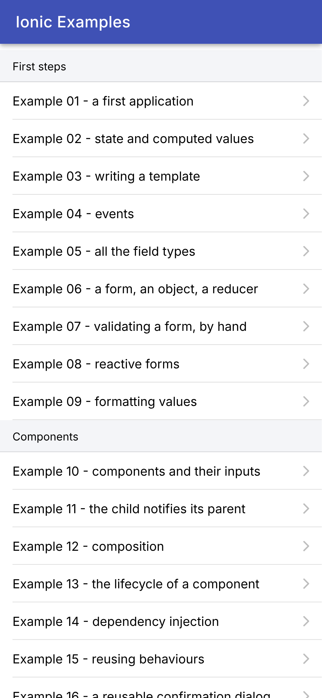
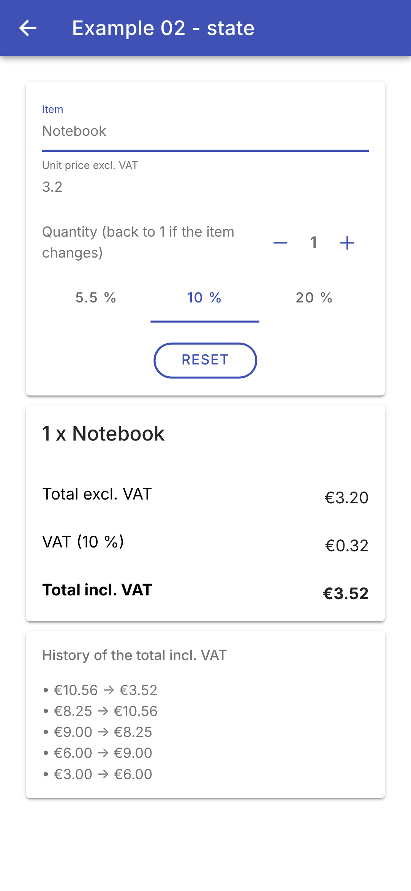
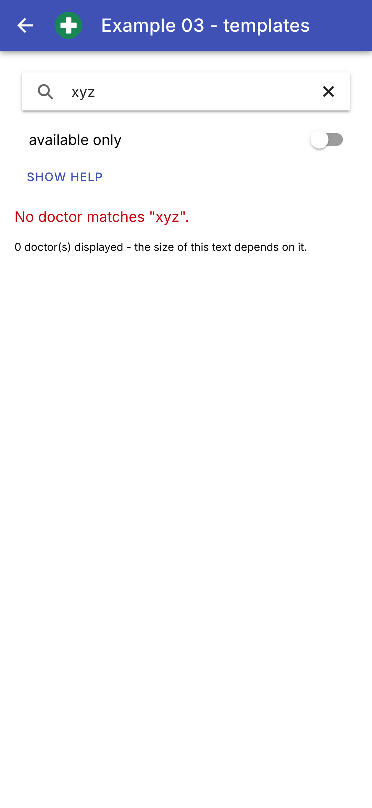
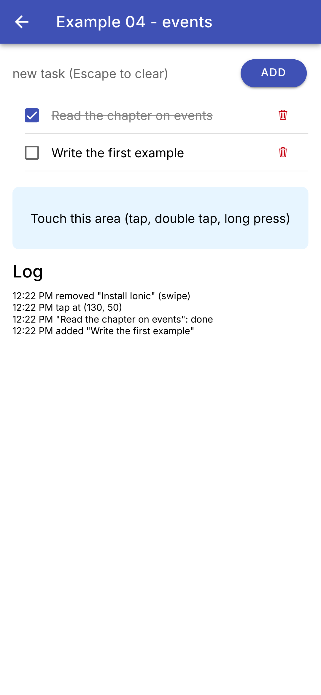
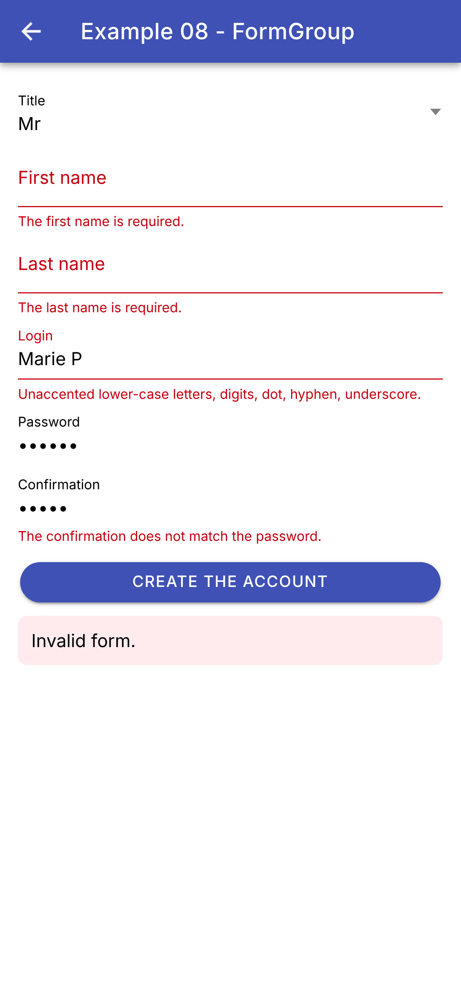

3.1. Exemplo 01: A estrutura de uma aplicação Ionic
3.1.1. O projeto
Uma aplicação [Ionic], criada com [Angular], é, inicialmente, uma aplicação [Angular] comum: ela é criada com a ferramenta de linha de comando do [Angular], [ng], e depois lhe são acrescentados os componentes do [Ionic] e do [Capacitor] ; essa ferramenta a transformará em uma aplicação [Android]:
| npm install -g @angular/cli
ng new examples_ionic --style=scss --skip-tests --ssr=false
cd examples_ionic
npm install @ionic/angular ionicons @capacitor/core @capacitor/android @capacitor/preferences
npm install -D @capacitor/cli
npx cap init "Ionic Examples" fr.stahe.examples --web-dir dist/examples_ionic/browser
|
- Linha 1: instala o [Angular CLI], o comando [ng], para todo o computador ([-g], “global”);
- linha 2: cria o projeto [examples_ionic]: uma aplicação [Angular] completa, pronta para executar. [--style=scss]: as folhas de estilo serão escritas em [SCSS], o CSS enriquecido com variáveis e aninhamento; [--skip-tests]: sem arquivos de testes unitários; [--ssr=false]: sem renderização no servidor, desnecessária em uma aplicação mobile;
- Linha 4: os pacotes do [Ionic] (seus componentes para [Angular] e sua fonte de ícones [ionicons]) e os do [Capacitor] (seu núcleo, a plataforma [Android] e o armazenamento chave-valor no dispositivo, que será usado a partir do Exemplo 20);
- linha 5: a ferramenta de linha de comando do [Capacitor], o comando [cap], usado apenas para desenvolvimento ([-D]);
- linha 6: escreve o arquivo [capacitor.config.ts]: o nome da aplicação e seu identificador (o prefixo [fr.stahe], invertido como um nome de domínio, seguido do nome da aplicação; duas aplicações instaladas no mesmo celular devem ter identificadores diferentes) e a pasta onde o [ng build] armazena a aplicação compilada.
O projeto de exemplo foi criado assim e, em seguida, sua pasta [src/app] foi preenchida manualmente para reunir vinte e cinco exemplos em uma única aplicação: uma página inicial (o menu de exemplos) e uma página por exemplo. Dessa forma, eles compartilham os mesmos pacotes, que são baixados uma única vez. Sua estrutura de diretórios:
| examples_ionic
├── angular.json the Angular project configuration
├── capacitor.config.ts the Capacitor configuration
├── package.json the packages and the scripts of the project
├── package-lock.json the exact versions of the installed packages
├── proxy.conf.json the relay to the JSON server (examples 22 to 25)
├── tsconfig.json the TypeScript configuration
├── tsconfig.app.json
├── captures/ the scripts that make the screenshots of the course
├── node_modules/ the installed packages (npm install)
├── public/ files delivered as is (icon, images, dictionaries)
├── android/ the Android Studio project (after npx cap add android)
└── src/
├── index.html the page that hosts the application
├── main.ts the entry point
├── styles.scss the styles of the whole application
└── app/
├── app.ts the root component
├── back-button.ts Android's Back button
├── app.routes.ts the routes: one address per example
├── examples.ts the list of the 25 examples
├── home/ the menu of the examples
│ ├── home.page.ts
│ └── home.page.html
├── common/ the code shared by examples 22 to 25
├── ex01-first-application/
│ ├── ex01.page.ts
│ └── ex01.page.html
├── ex02-state/
│ ├── ex02.page.ts
│ └── ex02.page.html
└── ...
|
Cada exemplo tem sua própria pasta, [src/app/exNN-short-name]. Uma página é formada por dois arquivos: uma classe [TypeScript] ([exNN.page.ts]) e seu template [HTML] ([exNN.page.html]).
3.1.2. O arquivo package.json
O arquivo [package.json] descreve o projeto para o [npm], o gerenciador de pacotes do [Node.js]: seu nome, seus scripts e os pacotes de que ele precisa.
| {
"name": "examples-ionic",
"version": "0.0.0",
"scripts": {
"ng": "ng",
"start": "ng serve",
"build": "ng build",
"watch": "ng build --watch --configuration development",
"android": "ng build && cap sync android && cap run android",
"captures": "node captures/captures.mjs"
},
"private": true,
"packageManager": "npm@10.9.4",
"dependencies": {
"@angular/common": "^22.2.0",
"@angular/compiler": "^22.2.0",
"@angular/core": "^22.2.0",
"@angular/forms": "^22.2.0",
"@angular/platform-browser": "^22.2.0",
"@angular/router": "^22.2.0",
"@capacitor/android": "^8.5.2",
"@capacitor/app": "^8.1.2",
"@capacitor/core": "^8.5.2",
"@capacitor/preferences": "^8.0.1",
"@ionic/angular": "^9.0.6",
"ionicons": "^8.1.0",
"rxjs": "~7.8.0",
"tslib": "^2.3.0"
},
"devDependencies": {
"@angular/build": "^22.2.1",
"@angular/cli": "^22.2.1",
"@angular/compiler-cli": "^22.2.0",
"@capacitor/cli": "^8.5.2",
"playwright": "^1.56.1",
"prettier": "^3.8.1",
"typescript": "~6.0.2"
}
}
|
- linhas 2–3: o nome e a versão do projeto;
- linhas 4–11: os scripts, que são iniciados por [npm run name] (ou [npm start] para o script [start]): [npm start] inicia o [ng serve], o servidor de desenvolvimento; [npm run build] inicia o [ng build], que compila a aplicação a ser implantada; [npm run android] faz a compilação, copia a aplicação para o projeto [Android] e a inicia no celular (veja “Execução”); [npm run captures] gera as capturas de tela deste curso;
- linha 12: [private]: este projeto não é uma biblioteca; ele nunca será publicado no repositório [npm];
- linhas 14–29: os pacotes de que a aplicação precisa, que serão incluídos nela. Os pacotes [@angular/...] são componentes do framework [Angular]: [core] (componentes, signals, injeção de dependência), [common] (pipes, o cliente HTTP), [forms] (formulários), [router] (o roteador), [platform-browser] (renderização no navegador), [compiler] (o compilador de templates). Em seguida vêm o [Capacitor] e seus plugins [app] (o botão Voltar do [Android], veja abaixo) e [preferences] (a memória do dispositivo, veja o Exemplo 20), [@ionic/angular] (os componentes do [Ionic]), [ionicons] (seus ícones), [rxjs] (fluxos assíncronos de dados, veja o Exemplo 19) e [tslib] (pequenas funções usadas pelo código compilado);
- linhas 30–38: pacotes usados apenas no desenvolvimento: [@angular/build] (o compilador da aplicação, construído sobre [esbuild] e [Vite]), [@angular/cli] (o comando [ng]), [@capacitor/cli] (o comando [cap]), [typescript], [prettier] (formatação automática do código) e [playwright] (controle do navegador, para as capturas de tela).
O prefixo [^] em uma versão ([^22.2.0]) aceita qualquer versão mais recente da mesma versão principal (22.3.0, mas não 23.0.0); o prefixo [~] ([~6.0.2]) aceita apenas versões de correção (6.0.3, mas não 6.1.0). O comando [npm install] baixa os pacotes para a pasta [node_modules] e grava as versões exatas selecionadas no arquivo [package-lock.json]. Para adicionar um pacote, digite [npm install package-name]: o comando o instala e acrescenta sua linha ao [package.json].
3.1.3. O arquivo angular.json
O arquivo [angular.json] diz ao [Angular CLI] como compilar e servir a aplicação. As linhas 14–36 (não mostradas) configuram os arquivos gerados pelo comando [ng generate] (estilos em [SCSS], sem testes). O restante:
| "root": "",
"sourceRoot": "src",
"prefix": "app",
"architect": {
"build": {
"builder": "@angular/build:application",
"options": {
"browser": "src/main.ts",
"tsConfig": "tsconfig.app.json",
"inlineStyleLanguage": "scss",
"assets": [
{
"glob": "**/*",
"input": "public"
}
],
"styles": [
"src/styles.scss"
]
},
"configurations": {
"production": {
"budgets": [
{
"type": "initial",
"maximumWarning": "2MB",
"maximumError": "5MB"
},
{
"type": "anyComponentStyle",
"maximumWarning": "8kB",
"maximumError": "16kB"
}
],
"outputHashing": "all"
},
"development": {
"optimization": false,
"extractLicenses": false,
"sourceMap": true
}
},
"defaultConfiguration": "production"
},
"serve": {
"builder": "@angular/build:dev-server",
"configurations": {
"production": {
"buildTarget": "examples_ionic:build:production"
},
"development": {
"buildTarget": "examples_ionic:build:development"
}
},
"defaultConfiguration": "development",
"options": {
"proxyConfig": "proxy.conf.json",
"port": 8100
}
}
|
- linhas 38–40: o projeto está na raiz da pasta; seu código-fonte está em [src/]. [prefix]: o prefixo das tags dos componentes ([app-root], [app-ex01]...);
- linhas 42–43: a compilação ([ng build]), tratada pelo builder [@angular/build:application];
- linha 45: o ponto de entrada da aplicação, [src/main.ts];
- linha 47: os estilos escritos dentro dos próprios componentes estão em [SCSS];
- linhas 48–53: o conteúdo da pasta [public/] é copiado como está para a aplicação compilada: o ícone [favicon.ico], a imagem [ex03/doctor.svg] do Exemplo 03 e os dicionários [i18n/] dos Exemplos 21 e 25;
- linhas 54–56: a folha de estilos global, [src/styles.scss];
- linhas 59–73: a configuração [production], que é a da aplicação entregue: o código é otimizado (esse é o padrão), os “budgets” emitem avisos se a aplicação ficar grande demais, e os nomes dos arquivos compilados contêm um hash de seu conteúdo ([outputHashing]), para que o navegador não mantenha em cache uma versão antiga;
- linhas 74–78: a configuração [development]: sem otimização e com “source maps”, que permitem às ferramentas de desenvolvimento do navegador exibir o código [TypeScript] original;
- linha 80: [ng build] usa a configuração [production]; [ng build --configuration development] usa a outra;
- linhas 82–97: o servidor de desenvolvimento ([ng serve]), configurado como [development] (linha 92), na porta 8100 (linha 95), com um repasse para o servidor JSON (linha 94).
3.1.4. O arquivo proxy.conf.json
| {
"/api": {
"target": "http://localhost:8080",
"secure": false,
"changeOrigin": false,
"logLevel": "warn"
}
}
|
Este arquivo só será usado nos exemplos 22 a 25. O servidor de desenvolvimento do [Angular] encaminha para o servidor JSON de [RdvMedecins] ([http://localhost:8080]) qualquer requisição cujo endereço comece por [/api]. Para o navegador, a aplicação e a API passam a ter a mesma origem ([http://localhost:8100]): não há verificação de CORS, e o cookie de sessão é aceito sem nenhuma configuração especial. Esses exemplos retomarão este ponto.
3.1.5. O arquivo capacitor.config.ts
| // =========================================================================
// capacitor.config.ts - a configuração do Capacitor
// -------------------------------------------------------------------------
// O Capacitor transforma a aplicação web (a pasta produzida por ng build)
// em uma aplicação Android: ele a encapsula em um projeto do Android Studio
// (pasta android/), onde é exibida por uma "WebView", o motor do
// navegador Chrome do celular. Comandos (veja o exemplo 01, "Execução"):
// npx cap add android (uma única vez: cria a pasta android/)
// ng build (compila a aplicação web)
// npx cap sync android (copia-a para o projeto Android)
// npx cap run android (executa em um emulador ou em um celular)
// =========================================================================
import type { CapacitorConfig } from '@capacitor/cli';
const config: CapacitorConfig = {
// o identificador único da aplicação no celular (e na Play Store)
appId: 'fr.stahe.examples',
// o nome exibido sob o ícone
appName: 'Ionic Examples',
// a pasta da aplicação web compilada (ng build)
webDir: 'dist/examples_ionic/browser',
server: {
// permite requisições HTTP não criptografadas (http://10.0.2.2:8080) para
// o servidor JSON de desenvolvimento (exemplos 22 a 25)
cleartext: true,
},
plugins: {
// CapacitorHttp: as requisições HTTP da aplicação deixam de ser feitas
// pela WebView e passam a ser feitas pelo código nativo do Android. Consequências (veja
// os exemplos 22 e 23): sem verificação de CORS (o servidor JSON não precisa
// liberar nada), e os cookies (o do token de autenticação) são
// armazenados pelo Android e reenviados automaticamente
CapacitorHttp: {
enabled: true,
},
},
};
export default config;
|
- linha 18: o ID da aplicação no celular, [fr.stahe.examples];
- linha 20: seu nome, exibido abaixo do ícone;
- linha 22: a pasta da aplicação web compilada, que o [Capacitor] copia para o projeto [Android];
- linhas 23–27: por padrão, o [Android] rejeita requisições HTTP não criptografadas; elas são permitidas para possibilitar a conexão com o servidor JSON de desenvolvimento (exemplos 22–25);
- linhas 28–37: as requisições HTTP serão feitas pelo código nativo do [Android] em vez de pelo navegador embutido. Mais uma vez, os exemplos 22 e 23 explicam o porquê.
Esta é a principal diferença arquitetural em relação ao [Flutter]: uma aplicação [Ionic] é uma aplicação **web** (HTML, CSS, JavaScript), que o [Capacitor] empacota em uma aplicação [Android]. Essa aplicação exibe apenas a “WebView”, o motor do navegador [Chrome] do celular, em tela cheia, que carrega a aplicação web incluída nela. O [Capacitor] também dá ao código JavaScript acesso aos recursos do celular (armazenamento, câmera, notificações etc.) por meio de plugins. O [Flutter], por outro lado, renderiza cada pixel da tela com seu próprio motor.
3.1.6. O arquivo tsconfig.json
| /* Para saber mais sobre o arquivo de configuração do TypeScript: https://www.typescriptlang.org/docs/handbook/tsconfig-json.html. */
/* Para saber mais sobre as opções do compilador do Angular: https://angular.dev/reference/configs/angular-compiler-options. */
{
"compileOnSave": false,
"compilerOptions": {
"strict": true,
"noImplicitOverride": true,
"noPropertyAccessFromIndexSignature": true,
"noImplicitReturns": true,
"noFallthroughCasesInSwitch": true,
"skipLibCheck": true,
"isolatedModules": true,
"experimentalDecorators": true,
"importHelpers": true,
"target": "ES2022",
"module": "preserve"
},
"angularCompilerOptions": {
"enableI18nLegacyMessageIdFormat": false,
"strictInjectionParameters": true,
"strictInputAccessModifiers": true,
"strictTemplates": true
},
"files": [],
"references": [
{
"path": "./tsconfig.app.json"
}
]
}
|
As configurações do compilador [TypeScript]. Observe o seguinte:
- linha 6: [strict]: a tipagem mais rigorosa. Uma variável do tipo [string] não pode conter [null]; um parâmetro deve ter um tipo etc.;
- linha 8: uma propriedade de um objeto “dicionário” (do tipo [{ [key: string]: value }]) é acessada com colchetes: [errors['required']], não [errors.required] (veja o Exemplo 08);
- linhas 9–10: uma função deve retornar um valor em todos os casos; um [case] de um [switch] não deve “cair” no seguinte;
- linha 22: [strictTemplates]: os templates [HTML] são verificados com o mesmo rigor que o código [TypeScript]: uma propriedade com erro de grafia ou um argumento do tipo errado são erros de compilação (veja o exemplo 06).
3.1.7. A página src/index.html
| <!doctype html>
<html lang="en">
<head>
<meta charset="utf-8">
<title>Ionic Examples</title>
<base href="/">
<!-- viewport-fit=cover: a aplicação ocupa toda a tela do celular, incluindo o notch;
user-scalable=no: sem zoom com dois dedos, como em uma aplicação nativa -->
<meta name="viewport" content="viewport-fit=cover, width=device-width, initial-scale=1.0, minimum-scale=1.0, maximum-scale=1.0, user-scalable=no">
<meta name="color-scheme" content="light dark">
<link rel="icon" type="image/x-icon" href="favicon.ico">
</head>
<body>
<app-root></app-root>
</body>
</html>
|
A aplicação web consiste nesta única página, que o navegador (ou a WebView do celular) carrega na inicialização:
- linha 2: o idioma da página, inglês;
- linha 6: a URL base da aplicação; as URLs das páginas ([/ex01], [/ex02]...) serão relativas à raiz;
- linha 9: a página ocupa toda a largura da tela, sem zoom: esse é o comportamento de um aplicativo, não de um site;
- linha 14: a tag [app-root], vazia: o [Angular] inserirá aí o componente raiz da aplicação.
3.1.8. O ponto de entrada: src/main.ts
| // =========================================================================
// src/main.ts - o ponto de entrada da aplicação
// -------------------------------------------------------------------------
// Uma aplicação Angular começa com bootstrapApplication: o Angular cria
// o componente RAIZ (App) e o insere na tag <app-root> da
// página index.html. O segundo parâmetro fornece os "providers"
// de toda a aplicação: Ionic, o roteador, o cliente HTTP, o idioma.
// =========================================================================
import { registerLocaleData } from '@angular/common';
import { provideHttpClient } from '@angular/common/http';
import localeFr from '@angular/common/locales/fr';
import { LOCALE_ID } from '@angular/core';
import { bootstrapApplication } from '@angular/platform-browser';
import { provideRouter, withComponentInputBinding } from '@angular/router';
import { provideIonicAngular } from '@ionic/angular';
import { App } from './app/app';
import { routes } from './app/app.routes';
// as regras de formatação francesas (datas, números, valores) dos
// "pipes" do Angular, para o segundo idioma dos exemplos 09 e 21 (en-US já vem embutido)
registerLocaleData(localeFr);
bootstrapApplication(App, {
providers: [
// Ionic: modo 'md' (Material Design) = o visual do Android, mesmo no
// navegador de um computador (caso contrário o Ionic adota o visual do iOS em um iPhone)
provideIonicAngular({ mode: 'md' }),
// o roteador: a lista de rotas (app.routes.ts);
// withComponentInputBinding: os parâmetros de uma rota são entregues aos
// inputs (input) do componente da página (veja o exemplo 17)
provideRouter(routes, withComponentInputBinding()),
// o cliente HTTP do Angular (exemplos 22 a 25)
provideHttpClient(),
// o idioma da aplicação: inglês (americano)
{ provide: LOCALE_ID, useValue: 'en-US' },
],
}).catch((err) => console.error(err));
|
- linha 22: as regras de formatação francesas para datas e números, para os “pipes” do [Angular], usadas como segundo idioma nos exemplos 09 e 21 ([en-US] já vem incluído);
- linha 24: [bootstrapApplication] inicia o [Angular]: ele cria o componente raiz, [App], e o insere na tag [app-root] do [index.html]. O segundo parâmetro especifica os “providers” ([providers]) de toda a aplicação: os serviços que a injeção de dependência (Exemplo 14) fornecerá aos componentes que os solicitarem;
- linha 28: o [Ionic], no modo [md] ([Material Design], a aparência do [Android]). Sem esta configuração, o [Ionic] assumiria a aparência do [iOS] em um iPhone e a do [Material Design] nos demais;
- linha 32: o roteador do [Angular] e suas rotas (o arquivo [app.routes.ts]). O roteador associa uma página a cada endereço;
- linha 34: o cliente HTTP do [Angular] (exemplos 22 a 25);
- linha 36: o idioma da aplicação, [en-US] (inglês americano), para a formatação de datas e números.
Uma observação sobre o que **não** está neste arquivo: o [zone.js]. Até a versão 20, uma aplicação [Angular] carregava essa biblioteca, que monitorava todo o código assíncrono (eventos, timers, requisições) para determinar quando atualizar a tela. A partir da versão 21, uma nova aplicação “zoneless” dispensa-a: o [Angular] atualiza a tela quando um **signal** lido por um template muda e após cada evento tratado por um template (um toque, uma tecla pressionada). É assim que funcionam todos os exemplos deste curso, e é por isso que seus dados variáveis são signals.
3.1.9. Estilos: src/styles.scss
| // =========================================================================
// src/styles.scss - os estilos de toda a aplicação
// -------------------------------------------------------------------------
// as folhas de estilo do Ionic: sem elas, seus componentes não têm
// o visual próprio. core.css é essencial; as demais são utilitários
// (margens, alinhamentos, classes ion-padding, ion-text-center...).
// =========================================================================
@use '@ionic/angular/css/core.css';
@use '@ionic/angular/css/normalize.css';
@use '@ionic/angular/css/structure.css';
@use '@ionic/angular/css/typography.css';
@use '@ionic/angular/css/padding.css';
@use '@ionic/angular/css/float-elements.css';
@use '@ionic/angular/css/text-alignment.css';
@use '@ionic/angular/css/text-transformation.css';
@use '@ionic/angular/css/flex-utils.css';
@use '@ionic/angular/css/display.css';
// o tema escuro do Ionic, ativado pela classe CSS ion-palette-dark aplicada
// à tag <html> (veja o exemplo 20)
@use '@ionic/angular/css/palettes/dark.class.css';
// a cor principal da aplicação (botões, barra superior): um índigo,
// como nos exemplos Flutter. O Ionic deriva de --ion-color-primary as
// variantes mais clara (tint) e mais escura (shade)
:root {
--ion-color-primary: #3f51b5;
--ion-color-primary-rgb: 63, 81, 181;
--ion-color-primary-contrast: #ffffff;
--ion-color-primary-contrast-rgb: 255, 255, 255;
--ion-color-primary-shade: #37479f;
--ion-color-primary-tint: #5262bc;
}
|
- linhas 9–18: as folhas de estilo do [Ionic]: [core.css] é essencial; as outras fornecem classes utilitárias ([ion-padding], [ion-text-center], [ion-margin-top]...);
- linha 22: o tema escuro, ativado pela classe CSS (exemplo 20);
- linhas 27–34: a cor primária da aplicação ([primary]), um índigo, como nos exemplos do [Flutter]. Os componentes do [Ionic] têm uma propriedade [color] ([color="primary"], [color="danger"], [color="success"]...) que se serve dessa paleta.
3.1.10. O componente raiz: src/app/app.ts
| // =========================================================================
// src/app/app.ts - o componente RAIZ da aplicação
// -------------------------------------------------------------------------
// Ele contém apenas dois componentes Ionic:
// - <ion-app>: o contêiner de toda aplicação Ionic;
// - <ion-router-outlet>: o local onde o roteador exibe a página do
// endereço atual. O do Ionic (e não o <router-outlet> do Angular)
// anima a transição de uma página para outra e mantém as páginas
// anteriores na memória: o botão Voltar do celular retorna a elas sem recriá-las.
// Seu construtor conecta o botão Voltar do Android (veja back-button.ts).
// =========================================================================
import { Component } from '@angular/core';
import { IonApp, IonRouterOutlet } from '@ionic/angular';
import { handleBackButton } from './back-button';
@Component({
selector: 'app-root',
imports: [IonApp, IonRouterOutlet],
template: `
<ion-app>
<ion-router-outlet />
</ion-app>
`,
})
export class App {
constructor() {
handleBackButton();
}
}
|
- linha 14: os componentes do [Ionic] são importados do pacote [@ionic/angular]. Cada um é uma classe [TypeScript]: [IonApp] para a tag [<ion-app>], [IonRouterOutlet] para [<ion-router-outlet>], e assim por diante;
- linhas 17–25: um componente [Angular] é uma classe decorada com [@Component]. O decorador fornece o nome de sua tag ([selector]), os componentes usados por seu template ([imports]: um componente só conhece o que importa) e o próprio template, que é escrito diretamente no decorador ([template]);
- linha 21: [<ion-app>], o contêiner de toda a aplicação [Ionic];
- linha 22: [<ion-router-outlet>], o local onde o roteador exibe a página do endereço atual. Este é o do [Ionic], e não o [<router-outlet>] do [Angular]: ele cuida da navegação entre páginas, assim como o [Android] faz, e mantém as páginas anteriores na memória;
- linhas 26–30: a própria classe não tem dados nem comportamento próprios. Seu construtor, executado uma única vez na inicialização, conecta o botão Voltar do [Android] (linha 28).
Um celular [Android] tem um botão (ou gesto) Voltar. Em um aplicativo [Flutter], ele funciona por conta própria: fecha a janela aberta, volta à tela anterior e sai do aplicativo a partir da primeira tela. Em um aplicativo [Ionic], o [Capacitor] recebe o evento Voltar; se não encontra ninguém para tratá-lo, simplesmente retrocede no histórico da WebView e fecha o aplicativo quando esse histórico está vazio. O [Ionic] não é notificado disso: uma janela aberta (exemplo 16) não se fecha, e é possível sair da aplicação a partir de uma página que não seja o menu. É preciso, portanto, conectá-lo com o plugin [@capacitor/app]:
| // =========================================================================
// src/app/back-button.ts - o botão Voltar do Android
// -------------------------------------------------------------------------
// No celular, o Capacitor recebe o toque no botão Voltar. Se não
// houver listener para esse evento, ele simplesmente volta no
// histórico da WebView e depois fecha a aplicação: o Ionic não sabe nada
// sobre isso (um diálogo aberto não fecha, nem o menu lateral).
// O plugin @capacitor/app permite assiná-lo: assim que há um
// listener, o Capacitor repassa o toque ao Ionic, que chama o handler
// de maior prioridade:
// - 100: um diálogo aberto (alert, ion-modal...) é fechado;
// - 99: o menu lateral aberto é fechado;
// - 1: (o nosso) voltamos à tela anterior; se não houver,
// saímos da aplicação.
// No navegador, não há botão Voltar: não fazemos nada.
// =========================================================================
import { inject } from '@angular/core';
import { NavController, Platform } from '@ionic/angular';
import { App as CapacitorApp } from '@capacitor/app';
import { Capacitor } from '@capacitor/core';
// a ser chamado no construtor do componente raiz (contexto de injeção)
export function handleBackButton(): void {
if (!Capacitor.isNativePlatform()) return;
const navigation = inject(NavController);
// um listener (vazio): o Capacitor passa a repassar o toque ao Ionic
void CapacitorApp.addListener('backButton', () => {});
inject(Platform).backButton.subscribeWithPriority(1, async () => {
// pop(): volta à tela anterior da pilha do Ionic; false: a
// pilha contém apenas a tela exibida, não há nada atrás
if (!(await navigation.pop())) {
await CapacitorApp.exitApp();
}
});
}
|
- linha 20: o plugin [App] do [Capacitor] (instalado por [npm install @capacitor/app]). Ele se chama [App], como o componente raiz: é renomeado na importação ([as CapacitorApp]) para evitar confusão;
- linha 24: uma função comum, chamada pelo construtor do componente raiz. Ela usa [inject]: só pode ser chamada onde o [Angular] é capaz de fornecer serviços (um construtor, a inicialização de propriedades), o “contexto de injeção”;
- linha 25: em um navegador ([ng serve]), não há botão Voltar: nenhuma ação é executada. [Capacitor.isNativePlatform()] equivale a [true] na aplicação [Android];
- linha 26: o serviço [NavController] do [Ionic]: ele conhece as pilhas de páginas do [<ion-router-outlet>];
- linha 28: um listener do evento [backButton], que não faz nada. Sua mera presença basta: assim que há um listener, o [Capacitor] deixa de retroceder automaticamente no histórico e repassa o tratamento ao [Ionic];
- linhas 29–35: o [Ionic] recebe o tratamento e chama UM ÚNICO handler: o de maior prioridade. As janelas ([AlertController], [ion-modal], a lista do [ion-select]...) recebem prioridade 100, e o menu suspenso tem prioridade 99: quando uma delas está aberta, é essa que se fecha. Caso contrário, nosso tratamento prevalece (prioridade 1): [navigation.pop()] volta à página anterior e retorna [false] se não houver nenhuma; a aplicação é então encerrada ([exitApp()]).
Neste projeto, o menu é a única página inicial: o botão Voltar leva de um exemplo de volta ao menu e, em seguida, encerra a aplicação.
3.1.12. As rotas: src/app/app.routes.ts
| // =========================================================================
// src/app/app.routes.ts - as rotas da aplicação de exemplos
// -------------------------------------------------------------------------
// Uma rota associa um ENDEREÇO (path) a uma PÁGINA (um componente). A página
// inicial ('') é o menu dos exemplos; cada exemplo tem seu endereço:
// /ex01, /ex02... O código de um exemplo só é carregado quando vamos até ele
// (loadComponent, loadChildren: carregamento tardio, "lazy", veja o exemplo 17).
// =========================================================================
import { Routes } from '@angular/router';
export const routes: Routes = [
{ path: '', loadComponent: () => import('./home/home.page').then((m) => m.HomePage) },
{ path: 'ex01', loadComponent: () => import('./ex01-first-application/ex01.page').then((m) => m.Ex01Page) },
{ path: 'ex02', loadComponent: () => import('./ex02-state/ex02.page').then((m) => m.Ex02Page) },
{ path: 'ex03', loadComponent: () => import('./ex03-templates/ex03.page').then((m) => m.Ex03Page) },
{ path: 'ex04', loadComponent: () => import('./ex04-events/ex04.page').then((m) => m.Ex04Page) },
{ path: 'ex05', loadComponent: () => import('./ex05-controlled-fields/ex05.page').then((m) => m.Ex05Page) },
{ path: 'ex06', loadComponent: () => import('./ex06-reducer/ex06.page').then((m) => m.Ex06Page) },
{ path: 'ex07', loadComponent: () => import('./ex07-validation/ex07.page').then((m) => m.Ex07Page) },
{ path: 'ex08', loadComponent: () => import('./ex08-reactive-forms/ex08.page').then((m) => m.Ex08Page) },
{ path: 'ex09', loadComponent: () => import('./ex09-formatting/ex09.page').then((m) => m.Ex09Page) },
{ path: 'ex10', loadComponent: () => import('./ex10-component-inputs/ex10.page').then((m) => m.Ex10Page) },
{ path: 'ex11', loadComponent: () => import('./ex11-lifting-state-up/ex11.page').then((m) => m.Ex11Page) },
{ path: 'ex12', loadComponent: () => import('./ex12-composition/ex12.page').then((m) => m.Ex12Page) },
{ path: 'ex13', loadComponent: () => import('./ex13-lifecycle/ex13.page').then((m) => m.Ex13Page) },
{ path: 'ex14', loadComponent: () => import('./ex14-injection/ex14.page').then((m) => m.Ex14Page) },
{ path: 'ex15', loadComponent: () => import('./ex15-behaviours/ex15.page').then((m) => m.Ex15Page) },
{ path: 'ex16', loadComponent: () => import('./ex16-confirmation/ex16.page').then((m) => m.Ex16Page) },
// os exemplos 17 e 18 têm suas próprias rotas, "filhas" de /ex17 e /ex18
{ path: 'ex17', loadChildren: () => import('./ex17-router/routes').then((m) => m.routes) },
{ path: 'ex18', loadChildren: () => import('./ex18-guards/routes').then((m) => m.routes) },
{ path: 'ex19', loadComponent: () => import('./ex19-asynchronous/ex19.page').then((m) => m.Ex19Page) },
{ path: 'ex20', loadComponent: () => import('./ex20-shared-state/ex20.page').then((m) => m.Ex20Page) },
{ path: 'ex21', loadComponent: () => import('./ex21-i18n/ex21.page').then((m) => m.Ex21Page) },
{ path: 'ex22', loadComponent: () => import('./ex22-http/ex22.page').then((m) => m.Ex22Page) },
{ path: 'ex23', loadComponent: () => import('./ex23-login/ex23.page').then((m) => m.Ex23Page) },
{ path: 'ex24', loadComponent: () => import('./ex24-api-layer/ex24.page').then((m) => m.Ex24Page) },
{ path: 'ex25', loadComponent: () => import('./ex25-server-errors/ex25.page').then((m) => m.Ex25Page) },
// qualquer outro endereço leva de volta ao menu
{ path: '**', redirectTo: '' },
];
|
- linha 12: as rotas: um array de objetos [Route];
- linha 13: a URL vazia ([http://localhost:8100/]) exibe a página inicial, [HomePage]. [loadComponent] contém uma função que importa o arquivo do componente: esse arquivo só é carregado quando você navega até esse endereço (lazy loading; veja o Exemplo 17). Na inicialização, a aplicação carrega, portanto, apenas o menu;
- linhas 14–29: uma rota, por exemplo: [/ex01], [/ex02]...;
- linhas 31–32: os Exemplos 17 e 18 têm suas próprias rotas (Exemplo 17);
- linha 41: qualquer outro endereço volta ao menu.
3.1.13. Lista de exemplos: src/app/examples.ts
| // =========================================================================
// src/app/examples.ts - a lista dos 25 exemplos
// -------------------------------------------------------------------------
// Uma fonte única para a página inicial (o menu dos exemplos). Cada
// exemplo tem um número, um título e um capítulo; seu endereço (/ex01, /ex02...)
// é declarado em app.routes.ts.
// =========================================================================
export interface Example {
number: string; // '01'...'25'
title: string;
chapter: string;
}
export const EXAMPLES: Example[] = [
{ number: '01', title: 'a first application', chapter: 'First steps' },
{ number: '02', title: 'state and computed values', chapter: 'First steps' },
{ number: '03', title: 'writing a template', chapter: 'First steps' },
{ number: '04', title: 'events', chapter: 'First steps' },
{ number: '05', title: 'all the field types', chapter: 'First steps' },
{ number: '06', title: 'a form, an object, a reducer', chapter: 'First steps' },
{ number: '07', title: 'validating a form, by hand', chapter: 'First steps' },
{ number: '08', title: 'reactive forms', chapter: 'First steps' },
{ number: '09', title: 'formatting values', chapter: 'First steps' },
{ number: '10', title: 'components and their inputs', chapter: 'Components' },
{ number: '11', title: 'the child notifies its parent', chapter: 'Components' },
{ number: '12', title: 'composition', chapter: 'Components' },
{ number: '13', title: 'the lifecycle of a component', chapter: 'Components' },
{ number: '14', title: 'dependency injection', chapter: 'Components' },
{ number: '15', title: 'reusing behaviours', chapter: 'Components' },
{ number: '16', title: 'a reusable confirmation dialog', chapter: 'Components' },
{ number: '17', title: 'the router', chapter: 'Routing' },
{ number: '18', title: 'navigation guards', chapter: 'Routing' },
{ number: '19', title: 'promises, observables and timers', chapter: 'Asynchrony and shared state' },
{ number: '20', title: 'a shared state', chapter: 'Asynchrony and shared state' },
{ number: '21', title: 'an application in two languages', chapter: 'Internationalization' },
{ number: '22', title: 'a first HTTP request', chapter: 'Talking to the server' },
{ number: '23', title: 'login, cookie and session', chapter: 'Talking to the server' },
{ number: '24', title: 'an API access layer', chapter: 'Talking to the server' },
{ number: '25', title: 'the errors returned by the server', chapter: 'Talking to the server' },
];
|
- linhas 9–13: uma interface [TypeScript] descreve a estrutura de um objeto: neste caso, um número, um título e um capítulo (três strings);
- linhas 15–41: os 25 exemplos, um array de objetos [Example]. A palavra-chave [export] torna a constante visível para outros arquivos, que a importam por meio de [import { EXAMPLES } from '../examples'].
3.1.14. A página inicial
A página inicial exibe esta tabela, agrupada por capítulo:
| // =========================================================================
// src/app/home/home.page.ts - o menu dos 25 exemplos
// -------------------------------------------------------------------------
// A primeira página da aplicação: a lista dos exemplos, agrupados por
// capítulo. Um toque em um exemplo abre sua página (/ex01, /ex02...).
// =========================================================================
import { Component } from '@angular/core';
import { RouterLink } from '@angular/router';
import {
IonContent, IonHeader, IonItem, IonItemDivider, IonItemGroup, IonLabel, IonList, IonTitle, IonToolbar,
} from '@ionic/angular';
import { EXAMPLES, Example } from '../examples';
@Component({
selector: 'app-home',
imports: [RouterLink, IonHeader, IonToolbar, IonTitle, IonContent, IonList, IonItemGroup, IonItemDivider, IonItem, IonLabel],
templateUrl: './home.page.html',
})
export class HomePage {
// os exemplos, agrupados por capítulo: [{ chapter, examples: [...] }, ...]
readonly chapters: { chapter: string; examples: Example[] }[] = [];
constructor() {
for (const example of EXAMPLES) {
let group = this.chapters.find((c) => c.chapter === example.chapter);
if (!group) {
group = { chapter: example.chapter, examples: [] };
this.chapters.push(group);
}
group.examples.push(example);
}
}
}
|
- linhas 15–19: o componente, sua tag, seus subcomponentes e seu template, que agora fica em um arquivo separado ([templateUrl]);
- linha 22: um campo da classe, lido pelo template: a lista de capítulos, cada um com seus exemplos;
- linhas 24–33: o construtor coloca cada exemplo no grupo de seu capítulo, criando o grupo quando necessário.
| <!-- o menu dos exemplos -->
<ion-header>
<ion-toolbar color="primary">
<ion-title>Ionic Examples</ion-title>
</ion-toolbar>
</ion-header>
<ion-content>
<ion-list>
@for (group of chapters; track group.chapter) {
<ion-item-group>
<ion-item-divider color="light">
<ion-label>{{ group.chapter }}</ion-label>
</ion-item-divider>
@for (example of group.examples; track example.number) {
<!-- routerLink: um toque no item abre a página do exemplo;
detail: a pequena seta à direita -->
<ion-item [routerLink]="'/ex' + example.number" detail>
<ion-label>Example {{ example.number }} - {{ example.title }}</ion-label>
</ion-item>
}
</ion-item-group>
}
</ion-list>
</ion-content>
|
- linhas 2–6: a barra superior: [<ion-header>] contém uma barra de ferramentas, [<ion-toolbar>], nas cores da aplicação ([color="primary"]), e seu título, [<ion-title>];
- linha 8: [<ion-content>]: o corpo da página, que rola quando excede a altura da tela;
- linha 9: [<ion-list>]: uma lista;
- linha 10: [@for] repete seu bloco para cada elemento de um array (veja o exemplo 03): um grupo por capítulo;
- linhas 12–14: o título do grupo, uma linha separadora ([<ion-item-divider>]);
- linha 18: uma linha da lista ([<ion-item>]), por exemplo. [[routerLink]]: tocar na linha leva à URL do exemplo; [detail]: a pequena seta à direita.

3.1.15. A página do Exemplo 01
Um exemplo é uma página, isto é, um componente, associada a um endereço pelo roteador. A do Exemplo 01:
| // =========================================================================
// src/app/ex01-first-application/ex01.page.ts - uma primeira aplicação
// -------------------------------------------------------------------------
// Uma página Ionic é um COMPONENTE Angular: uma classe TypeScript, decorada
// com @Component, associada a um TEMPLATE HTML que descreve o que
// ela exibe. O template mistura tags HTML comuns, componentes Ionic
// (<ion-button>, <ion-card>...) e expressões {{ ... }}
// que exibem os dados da classe.
// Os dados que mudam são SIGNALS: quando o valor de um signal
// muda, o Angular atualiza, na tela, o que o exibe.
// =========================================================================
import { Component, signal } from '@angular/core';
import {
IonBackButton, IonButton, IonButtons, IonContent, IonHeader, IonText, IonTitle, IonToolbar,
} from '@ionic/angular';
// dados "comuns", fora do componente: nunca mudam
const title = 'Welcome to Ionic';
const languages = ['TypeScript', 'Angular', 'Ionic'];
// "12:05:09": a hora atual, com dois dígitos
function currentTime(): string {
const d = new Date();
const twoDigits = (n: number) => n.toString().padStart(2, '0');
return `${twoDigits(d.getHours())}:${twoDigits(d.getMinutes())}:${twoDigits(d.getSeconds())}`;
}
@Component({
// o nome da tag do componente (<app-ex01>): o roteador a insere
// sozinho, nós nunca a escrevemos
selector: 'app-ex01',
// os componentes Ionic usados pelo template: um componente só
// conhece o que importa
imports: [IonHeader, IonToolbar, IonButtons, IonBackButton, IonTitle, IonContent, IonButton, IonText],
// o template, em um arquivo separado
templateUrl: './ex01.page.html',
})
export class Ex01Page {
// dados lidos pelo template: campos simples da classe
readonly title = title;
readonly languages = languages;
// o ESTADO: signals. signal(0) cria um signal com valor inicial 0;
// lemos seu valor chamando-o como uma função: counter()
readonly counter = signal(0);
readonly time = signal(currentTime());
// o método chamado pelo botão
increment(): void {
// set: o novo valor; update: o novo valor, calculado a partir
// do antigo. O Angular então atualiza a tela: nunca a
// modificamos nós mesmos
this.counter.update((n) => n + 1);
this.time.set(currentTime());
}
}
|
- linha 13: [Component] (o decorador de componente) e [signal] vêm do núcleo do [Angular];
- linhas 14–16: os componentes do [Ionic] usados pelo template;
- linhas 19–20: dois valores de dados comuns, declarados fora do componente: eles nunca mudam. [const]: uma variável à qual se atribui um valor uma única vez;
- linhas 23–27: uma função comum que retorna a hora atual no formato “12:05:09”. Ela contém uma pequena arrow function, [twoDigits]. [
...${expression}...] é um template string: o valor de cada expressão é inserido nele;
- linhas 29–38: o decorador [@Component]: a tag do componente (linha 32, que o próprio roteador insere: nós nunca a escrevemos), os componentes do [Ionic] usados por seu template (linha 35) e o arquivo que contém seu template (linha 37);
- linha 39: a classe do componente. [export]: o arquivo de rotas a importa;
- linhas 41–42: dois campos da classe, lidos pelo template. [readonly]: eles não serão reatribuídos;
- linhas 46–47: o **estado** do componente, os dados que mudam: dois **signals**. [signal(0)] cria um signal com valor inicial 0, cujo tipo ([number]) é inferido a partir desse valor. O valor de um signal é lido chamando-o como uma função: [counter()];
- linhas 50–56: o método chamado pelo botão. Ele não interage com a tela; ele altera o estado. [update] calcula o novo valor a partir do antigo (linha 54), e [set] o define diretamente (linha 55). O [Angular] então sabe que as partes da tela que leem esses signals precisam ser redesenhadas, e as redesenha.
O template:
| <!-- ======================================================================
ex01.page.html - o template da página do exemplo 01
====================================================================== -->
<!-- ion-header: a barra superior, com um botão Voltar e um título -->
<ion-header>
<ion-toolbar color="primary">
<ion-buttons slot="start">
<!-- o botão Voltar: leva de volta ao menu dos exemplos (defaultHref)
se chegamos diretamente a esta página -->
<ion-back-button defaultHref="/" />
</ion-buttons>
<ion-title>Example 01 - a first application</ion-title>
</ion-toolbar>
</ion-header>
<!-- ion-content: o corpo da página, que rola se necessário;
ion-padding: uma margem ao redor -->
<ion-content class="ion-padding">
<h2>{{ title }}</h2>
<p>This screen is built by Ionic and Angular, from the Ex01Page component and its template.</p>
<!-- {{ expression }}: o valor de uma expressão TypeScript, inserido no texto -->
<p>It is written in {{ languages.join(', ') }} ({{ languages.length }} languages).</p>
<!-- (click): o método a chamar quando o botão é pressionado (veja o exemplo 04) -->
<ion-button (click)="increment()">Click me</ion-button>
<p>
<!-- counter(): LEMOS um signal chamando-o -->
<ion-text color="primary">
<strong>You clicked {{ counter() }} times (last click: {{ time() }}).</strong>
</ion-text>
</p>
</ion-content>
|
- linhas 6–15: a barra superior. [<ion-buttons slot="start">] coloca botões no início da barra (à esquerda): um botão Voltar, [<ion-back-button>], que leva de volta à página anterior. Se não houver uma (você digitou o endereço diretamente, [/ex01]), [defaultHref] especifica a página para a qual ir: o menu;
- linha 19: o corpo da página, com uma margem ao redor (classe [ion-padding]);
- linha 20: [{{ title }}]: uma “interpolação”, isto é, o valor de uma expressão inserido no texto. A expressão é avaliada no contexto da classe: [title] é o campo da linha 41 do componente;
- linha 23: uma expressão pode chamar métodos: [languages.join(', ')], [languages.length];
- linha 26: [(click)="increment()"]: quando o botão é pressionado, o [Angular] executa a instrução escrita entre as aspas. A chamada é escrita com parênteses: a instrução só é executada quando o botão é pressionado (veja o Exemplo 04);
- linhas 30–32: texto que depende do estado. [counter()] lê o signal: quando ele muda, este texto muda. [<ion-text color="primary">] colore seu conteúdo.
A árvore de componentes da tela, como exibida pela extensão [Angular DevTools] das ferramentas de desenvolvimento do [Chrome] (aba [Angular]), complementada com os elementos HTML:
| App (app-root)
└── ion-app
└── ion-router-outlet
└── Ex01Page (app-ex01)
├── ion-header
│ └── ion-toolbar
│ ├── ion-buttons
│ │ └── ion-back-button
│ └── ion-title
└── ion-content
├── h2 (the title)
├── p
├── p
├── ion-button
└── p
└── ion-text
└── strong (the counter)
|
Assim como no [Flutter], escrevemos pouquíssimo código de “implementação” e muito código “descritivo”. Mas, enquanto o [Flutter] descreve a tela em [Dart] por meio de construtores de widgets aninhados, o [Angular] separa as duas coisas: a classe [TypeScript] contém os dados e os comportamentos, enquanto o template [HTML] descreve a tela. Os componentes do [Ionic] ([<ion-button>], [<ion-toolbar>]...) são verdadeiros elementos HTML, “web components” (“Web Components”) criados pela biblioteca [@ionic/core]: eles funcionam em qualquer navegador, e o [@ionic/angular] os encapsula para que o [Angular] possa tratá-los como seus próprios componentes. É por isso que o mesmo [Ionic] também existe para [React] e [Vue.js].
3.1.16. Execução
No console aberto na pasta [examples_ionic] (com os pacotes já instalados uma vez por [npm install]):
O console exibe:
| > examples-ionic@0.0.0 start
> ng serve
Initial chunk files | Names | Raw size
styles.css | styles | 56.90 kB |
main.js | main | 6.35 kB |
| Initial total | 63.25 kB
Lazy chunk files | Names | Raw size
chunk-QC4MGRJ7.js | home-page | 7.15 kB |
chunk-IMCNE3A4.js | ex01-page | 6.23 kB |
...
Application bundle generation complete. [6.046 seconds]
Watch mode enabled. Watching for file changes...
➜ Local: http://localhost:8100/
|
A aplicação compila em alguns segundos: um arquivo [main.js] carregado na inicialização e um pequeno arquivo por página (“lazy chunk”), carregado sob demanda. Abra a URL [http://localhost:8100] no [Chrome]. Para ver a aplicação no tamanho de um celular, abra as ferramentas de desenvolvimento (F12), depois a barra de emulação de dispositivos (Ctrl+Shift+M) e selecione um celular na lista (um [Pixel 7], por exemplo) ou especifique as dimensões (as capturas de tela deste tutorial têm 412 x 892 pixels). À esquerda, a tela inicial do Exemplo 01; à direita, depois de tocar duas vezes no botão:
Dois experimentos para fazer:
- Edite o texto da linha 21 de [ex01.page.html] e salve o arquivo: o console exibe [Component update sent to client(s)], e a tela muda imediatamente, com o contador mantendo seu valor. Isso é um hot reload: o novo template substitui o antigo na aplicação em execução. Uma alteração no código [TypeScript] ([ex01.page.ts]), por outro lado, recarrega a página inteira ([Page reload sent to client(s)]): o contador volta a 0, como no “hot restart” do [Flutter];
- Explore a aplicação com as ferramentas de desenvolvimento: a aba [Elements] exibe as tags [<ion-...>] da página, a aba [Console] mostra eventuais erros, e a aba [Sources] exibe o código [TypeScript] (graças aos “source maps”), onde é possível definir pontos de interrupção.
Passemos agora ao [Android]. Primeiro, é preciso criar o projeto [Android]:
Este comando cria a pasta [android/]: um projeto [Android Studio] completo que simplesmente exibe a WebView e carrega nela a aplicação web. Raramente se fazem alterações nele (o ícone, as permissões). Contudo, um ajuste é necessário com as versões recentes do [Android Studio]: o JDK delas é um [Java] 25, que não é suportado pela versão do [Gradle] selecionada pelo [Capacitor] 8 (versão 8.14). O build então falha com o erro [Unsupported class file major version 69]. Basta passar para o [Gradle] 9.1 modificando uma linha do arquivo [android/gradle/wrapper/gradle-wrapper.properties]:
| distributionUrl=https\://services.gradle.org/distributions/gradle-9.1.0-all.zip
|
(em vez de [gradle-8.14.3-all.zip]). O primeiro build baixa esta versão do [Gradle] (cerca de 200 MB). Depois, a cada vez que a aplicação mudar:
| npx ng build
npx cap sync android
npx cap run android
|
- Linha 1: compila a aplicação web na pasta [dist/examples_ionic/browser] (configuração [production]);
- linha 2: copia-a para o projeto [Android] (usando a configuração de [capacitor.config.ts] e os plugins do [Capacitor]);
- linha 3: compila a aplicação [Android] (com a ferramenta [Gradle]), instala-a em um emulador em execução ou em um celular conectado e a inicia. O comando pede que você selecione um dispositivo se houver vários disponíveis.
No celular, o botão Voltar leva de volta uma tela, até o menu, e encerra a aplicação a partir do menu (veja [back-button.ts]).
Você também pode abrir o projeto no [Android Studio] ([npx cap open android]) e iniciar a aplicação pelo botão [Run]. O primeiro build leva um ou dois minutos; os seguintes levam apenas alguns segundos. No celular, a tela é a mesma do navegador, renderizada pelo mesmo motor, o do [Chrome]. Ela também é depurada com as mesmas ferramentas: o endereço [chrome://inspect], no [Chrome] do computador, lista as WebViews das aplicações em execução no emulador e abre suas ferramentas de desenvolvimento.
Esse ciclo (compilar, copiar, build) não oferece o hot reload do [ng serve]. Para ativá-lo no celular, é possível instruir o aplicativo a buscar seu código no servidor de desenvolvimento do computador, em vez de em sua cópia embutida:
| npx ng serve --host 0.0.0.0
npx cap run android --live-reload --host=192.168.1.20 --port=8100
|
- linha 1: o servidor de desenvolvimento aceita conexões de outras máquinas além do próprio computador (por padrão, ele só escuta em [localhost]);
- linha 2: [192.168.1.20] é o endereço do computador na rede local ([ipconfig] no [Windows] o informa). A aplicação instalada passa então a carregar [http://192.168.1.20:8100] e a recarregá-lo sempre que uma alteração é feita.
Use com cuidado: o celular deve estar conectado ao computador (mesma rede Wi-Fi, firewall do computador aberto na porta 8100), e o aplicativo instalado dessa forma não funcionará mais sem o servidor de desenvolvimento. Ao terminar o trabalho, execute novamente [npx ng build], seguido de [npx cap sync android], para que o aplicativo volte a embutir seu próprio código. Neste curso, desenvolveremos no navegador e depois executaremos no [Android] para verificar.
3.2. Exemplo 02: estado e valores calculados
O estado está no centro do [Angular], assim como do [Flutter] e do [React]. Este exemplo calcula o preço com IVA de um item:
| // =========================================================================
// src/app/ex02-state/ex02.page.ts - estado e valores calculados
// -------------------------------------------------------------------------
// Uma pequena calculadora de preços (com IVA):
// - o ESTADO: signals (signal()). Mudar seu valor (set, update)
// atualiza, na tela, o que os exibe;
// - um valor CALCULADO a partir do estado NÃO é estado: é um
// signal calculado (computed()), recalculado quando um dos signals que ele
// lê muda. Está sempre atualizado, sem nada a sincronizar;
// - um dado que depende dos valores SUCESSIVOS do estado (o histórico
// dos totais) é atualizado onde o estado muda: no método
// change(), pelo qual passam todas as mudanças;
// - o título da aplicação (aba do navegador) não está no
// template: é um EFFECT (effect()), uma função que o Angular reexecuta
// a cada vez que um dos signals que ela lê muda.
// =========================================================================
import { Component, computed, DestroyRef, effect, inject, signal } from '@angular/core';
import { Title } from '@angular/platform-browser';
import {
IonBackButton, IonButton, IonButtons, IonCard, IonCardContent, IonCardHeader, IonCardSubtitle, IonCardTitle,
IonContent, IonHeader, IonIcon, IonInput, IonItem, IonLabel, IonList, IonNote, IonSegment, IonSegmentButton,
IonTitle, IonToolbar, SegmentValue,
} from '@ionic/angular';
import { addIcons } from 'ionicons';
import { add, remove } from 'ionicons/icons';
// um formatador de valores em euros, no estilo inglês (€1,234.50), veja o exemplo 09
const euros = new Intl.NumberFormat('en-US', { style: 'currency', currency: 'EUR' });
// os valores iniciais (botão Redefinir)
const LABEL = 'Pen';
const PRICE = '2.5';
@Component({
selector: 'app-ex02',
imports: [
IonHeader, IonToolbar, IonButtons, IonBackButton, IonTitle, IonContent, IonCard, IonCardHeader, IonCardTitle,
IonCardSubtitle, IonCardContent, IonInput, IonButton, IonIcon, IonSegment, IonSegmentButton, IonList, IonItem,
IonLabel, IonNote,
],
templateUrl: './ex02.page.html',
styles: `
.quantity { display: flex; align-items: center; margin: 12px 0 8px; }
.quantity span { flex: 1; }
.quantity strong { font-size: 1.1em; min-width: 1.5em; text-align: center; }
.bold { font-weight: bold; }
ion-note { font-size: 1rem; }
`,
})
export class Ex02Page {
// o estado: quatro signals, tipados pelo valor inicial
// (o preço é mantido como TEXTO: o que digitamos, com o separador)
readonly label = signal(LABEL);
readonly priceText = signal(PRICE);
readonly quantity = signal(1);
readonly vatRate = signal(20); // em %
// o histórico das últimas 5 mudanças do total com IVA
readonly history = signal<string[]>([]);
// valores CALCULADOS: computed() memoriza o resultado e só
// o recalcula se um dos signals lidos tiver mudado
readonly priceExclVat = computed(() => Number(this.priceText().replace(',', '.')) || 0);
readonly totalExclVat = computed(() => this.quantity() * this.priceExclVat());
readonly vatAmount = computed(() => (this.totalExclVat() * this.vatRate()) / 100);
readonly totalInclVat = computed(() => this.totalExclVat() + this.vatAmount());
// as linhas do cartão de resultados: DADOS, que o template percorre
readonly lines = computed(() => [
{ label: 'Total excl. VAT', amount: euros.format(this.totalExclVat()), bold: false },
{
label: `VAT (${this.vatRate()} %)`,
amount: euros.format(this.vatAmount()),
bold: false,
},
{ label: 'Total incl. VAT', amount: euros.format(this.totalInclVat()), bold: true },
]);
constructor() {
// os ícones usados pelo template (<ion-icon name="add" />)
addIcons({ add, remove });
// o serviço Title do Angular muda o título da página (a aba do
// navegador). effect() reexecuta a função a cada vez que totalInclVat muda
const title = inject(Title);
effect(() => title.setTitle(`Incl. VAT: ${euros.format(this.totalInclVat())}`));
// quando saímos da página (o componente é destruído), restauramos o título da aplicação
inject(DestroyRef).onDestroy(() => title.setTitle('Ionic Examples'));
}
// TODAS as mudanças do estado passam por este método: ele anota o
// total com IVA antes da mudança, aplica a mudança e completa
// o histórico se o total mudou
change(apply: () => void): void {
const oldTotal = this.totalInclVat();
apply();
// ler um computed após uma mudança o recalcula imediatamente
const newTotal = this.totalInclVat();
if (newTotal !== oldTotal) {
const line = `${euros.format(oldTotal)} -> ${euros.format(newTotal)}`;
// um NOVO array (e não push): o signal percebe que seu valor mudou
this.history.update((h) => [line, ...h].slice(0, 5));
}
}
// mudar o item redefine a quantidade para 1: fazemos isso onde sabemos
// POR QUE o estado muda
changeLabel(newValue: string): void {
this.change(() => {
this.label.set(newValue);
this.quantity.set(1);
});
}
changePrice(text: string): void {
this.change(() => this.priceText.set(text));
}
// delta: -1 ou +1
addQuantity(delta: number): void {
this.change(() => this.quantity.update((q) => q + delta));
}
// o valor de um segmento é do tipo SegmentValue (string | number), ou
// undefined se nenhum botão estiver escolhido: Number() o converte em número
changeRate(value: SegmentValue | undefined): void {
this.change(() => this.vatRate.set(Number(value)));
}
reset(): void {
this.change(() => {
this.label.set(LABEL);
this.priceText.set(PRICE);
this.quantity.set(1);
this.vatRate.set(20);
});
}
}
|
- Linha 18: [Angular] funções usadas: [signal], [computed], [effect], [inject] e [DestroyRef];
- linha 19: o serviço [Title], que dá acesso ao título da página;
- linhas 25–26: os ícones. [Ionic] só fornece os ícones que a aplicação declara: eles são importados de [ionicons/icons] (aqui, [add], o “+”, e [remove], o “-”) e registrados por [addIcons] (linha 80); o template então se refere a eles pelo nome ([<ion-icon name="add" />]);
- linha 29: um formatador de valores monetários no estilo inglês (€1,234.50), criado uma única vez fora do componente, com a API JavaScript [Intl] (veja o exemplo 09);
- linhas 43–49: estilos específicos deste componente. O [Angular] os “encapsula”: a classe [.bold] deste componente se aplica apenas ao seu template e não se estende às outras páginas;
- linhas 54–57: quatro variáveis de estado, quatro signals. O tipo delas é inferido a partir dos valores iniciais: [signal('Pen')] é um signal de string, [signal(1)] é um signal numérico. [TypeScript] tem um único tipo para números, a saber, [number]. O preço é guardado exatamente como foi digitado, como texto: veremos por quê;
- linha 59: o histórico das últimas cinco alterações do total. [signal<string[]>([])]: quando o valor inicial não basta para determinar o tipo (um array vazio, mas de quê?), o tipo é indicado entre sinais de menor e maior;
- Linhas 63–66: quatro valores **calculados** a partir do estado. Eles NÃO são estados; são signals calculados ([computed(() => ...)]). O [Angular] rastreia os signals lidos pela função (aqui, [priceText], depois [quantity] e [priceExclVat]...) e chama a função novamente somente se algum deles tiver mudado; caso contrário, devolve o resultado em cache. Um signal calculado é lido como qualquer outro ([totalInclVat()]), mas não é escrito. É a mesma regra que já vimos com [Flutter] e [React]: só o que não pode ser calculado é guardado no estado; todo o resto é calculado;
- linha 63: o preço, derivado do texto digitado. [Number('3.2')] converte o texto em número e devolve [NaN] (“not a number”) se o texto não for um número: [|| 0] então substitui [NaN] (e 0) por 0. A vírgula francesa é aceita, substituindo-a por um ponto;
- linhas 68–76: as três linhas da tabela de resultados, em formato de dados: um array de objetos que o template percorrerá. O rótulo do IVA depende da alíquota: ele também é um valor calculado;
- Linhas 84–85: o título da página (a aba do navegador) acompanha o total. O título não faz parte do template da página: é um **efeito** colateral, tratado por [effect()]. Como [computed], [effect] rastreia os signals lidos por sua função e a chama sempre que um deles muda. O serviço [Title] é obtido por [inject(Title)], a injeção de dependência do [Angular] (Exemplo 14); [inject] só é chamado durante a construção do componente;
- linha 87: quando se sai da página, o componente é destruído; [DestroyRef.onDestroy] registra uma função chamada nesse momento, que restaura o título da aplicação. O próprio efeito é interrompido automaticamente;
- linhas 93–103: o histórico dos totais depende dos valores **sucessivos** do total, algo que um signal calculado não consegue expressar. Por isso, fazemos TODAS as alterações de estado passarem pelo método [change], que recebe como parâmetro a alteração a ser feita — uma função sem parâmetros nem valor de retorno (do tipo [() => void]): ele registra o total antes da alteração, aplica a alteração, lê o total depois dela (um signal calculado lido após uma alteração é recalculado imediatamente) e atualiza o histórico se o total mudou. Este é o lugar natural para esse cálculo: onde o estado muda;
- Linha 101: [update] recebe o array antigo e devolve o novo: a nova linha, seguida das antigas ([...h] as “espalha”), das quais somente as cinco primeiras são mantidas. Criamos um array NOVO, em vez de modificar o antigo com [push]: um signal compara o valor antigo com o novo para determinar se mudou, e um array modificado no próprio lugar continuaria, do ponto de vista do signal, sendo o mesmo array;
- linhas 107–112: trocar o item redefine a quantidade para 1. Isso é feito no método que trata a alteração do campo, onde sabemos por que o estado está mudando;
- linhas 125–127: a alíquota selecionada nos botões de opção. Seu valor é do tipo [SegmentValue] (uma string ou um número), ou [undefined] se nenhum botão estiver selecionado: [Number] o converte em número;
- linhas 129–136: várias alterações de estado consecutivas: o [Angular] atualizará a tela apenas uma vez, depois do método.
O template:
| <!-- ======================================================================
ex02.page.html - o template da calculadora de preços (com IVA)
====================================================================== -->
<ion-header>
<ion-toolbar color="primary">
<ion-buttons slot="start">
<ion-back-button defaultHref="/" />
</ion-buttons>
<ion-title>Example 02 - state</ion-title>
</ion-toolbar>
</ion-header>
<ion-content class="ion-padding">
<ion-card>
<ion-card-content>
<!-- [value]: o campo EXIBE o valor do signal;
(ionInput): chamado a cada tecla digitada; $event.detail.value é o novo texto -->
<ion-input label="Item" labelPlacement="floating" [value]="label()"
(ionInput)="changeLabel($event.detail.value ?? '')" />
<!-- inputmode="decimal": o teclado numérico do celular, com o separador decimal -->
<ion-input label="Unit price excl. VAT" labelPlacement="floating" inputmode="decimal" [value]="priceText()"
(ionInput)="changePrice($event.detail.value ?? '')" />
<div class="quantity">
<span>Quantity (back to 1 if the item changes)</span>
<!-- [disabled]: o botão fica desabilitado enquanto a condição for verdadeira -->
<ion-button fill="clear" [disabled]="quantity() <= 0" (click)="addQuantity(-1)">
<ion-icon slot="icon-only" name="remove" />
</ion-button>
<strong>{{ quantity() }}</strong>
<ion-button fill="clear" (click)="addQuantity(1)">
<ion-icon slot="icon-only" name="add" />
</ion-button>
</div>
<!-- botões dos quais apenas UM é selecionado: a alíquota do IVA -->
<ion-segment [value]="vatRate()" (ionChange)="changeRate($event.detail.value)">
<ion-segment-button [value]="5.5"><ion-label>5.5 %</ion-label></ion-segment-button>
<ion-segment-button [value]="10"><ion-label>10 %</ion-label></ion-segment-button>
<ion-segment-button [value]="20"><ion-label>20 %</ion-label></ion-segment-button>
</ion-segment>
<div class="ion-text-center ion-margin-top">
<ion-button fill="outline" shape="round" (click)="reset()">Reset</ion-button>
</div>
</ion-card-content>
</ion-card>
<ion-card>
<ion-card-header>
<!-- {{ }}: lemos os signals chamando-os -->
<ion-card-title>{{ quantity() }} x {{ label() }}</ion-card-title>
</ion-card-header>
<ion-list lines="none">
<!-- uma linha por elemento do array calculado lines() (veja o exemplo 03) -->
@for (line of lines(); track line.label) {
<ion-item>
<ion-label [class.bold]="line.bold">{{ line.label }}</ion-label>
<ion-note slot="end" color="dark" [class.bold]="line.bold">{{ line.amount }}</ion-note>
</ion-item>
}
</ion-list>
</ion-card>
<ion-card>
<ion-card-header>
<ion-card-subtitle>History of the total incl. VAT</ion-card-subtitle>
</ion-card-header>
<ion-card-content>
@for (line of history(); track $index) {
<div>• {{ line }}</div>
}
</ion-card-content>
</ion-card>
</ion-content>
|
- linha 15: [<ion-card>], um cartão: um bloco com cantos arredondados, levemente elevado;
- linhas 19–20: um campo de entrada, [<ion-input>], com seu rótulo ([label]) “flutuando” acima do texto ([labelPlacement="floating"]). [[value]="label()"] é um binding de propriedade: a propriedade [value] do componente recebe o valor da expressão e o recebe novamente a cada mudança. [(ionInput)] é o evento disparado a cada tecla digitada; [$event] é o objeto do evento, cuja propriedade [detail.value] contém o novo texto (uma string, [null] ou [undefined]: [?? ''] substitui os dois últimos por uma string vazia). O campo é, assim, **controlado**: exibe o estado atual e avisa o componente a cada alteração;
- linhas 22–23: o preço. [inputmode="decimal"] seleciona o teclado do telefone: o teclado numérico, com a vírgula. Se o campo estivesse vinculado ao preço (um número), digitar “3,2” resultaria em 3.2, que o vínculo [[value]] reescreveria no campo como “3.2.” Vinculado ao texto digitado, o campo mantém o que o usuário digitou;
- linhas 25–35: a quantidade, com dois botões, “–” e “+.” [fill="clear"]: um botão sem fundo; [slot="icon-only"]: o ícone é todo o seu conteúdo. [[disabled]] desativa o botão enquanto a expressão for verdadeira: a quantidade não pode ficar abaixo de 0;
- Linhas 38–42: a alíquota do IVA, três botões “segmentados”, dos quais apenas um fica selecionado, [<ion-segment>]. Seu valor é o do botão selecionado; [(ionChange)] é disparado quando outro é selecionado. [[value]="5.5"] define o valor do botão como o NÚMERO 5.5; [value="5.5"], sem colchetes, o definiria como a string “5.5”;
- linha 45: o botão Reset, com contorno ([fill="outline"]) e arredondado ([shape="round"]);
- linha 53: [{{ quantity() }} x {{ label() }}]: dois signals, lidos a partir do texto;
- Linhas 57–62: uma linha de lista para cada elemento do array calculado [lines()] ([@for]; veja o Exemplo 03). [<ion-note slot="end">] coloca o valor no fim da linha; [[class.bold]] define a classe CSS [bold] se a expressão for verdadeira;
- Linhas 71–73: uma linha de texto para cada entrada do histórico.
Alteramos a quantidade (pressionando “+” duas vezes), a alíquota (10%) e o preço (3.2); depois, o item:
 |  |
A cada mudança do total com IVA, uma linha é adicionada ao histórico. Trocar o item redefine a quantidade para 1 (à direita). Enquanto isso, a aba do navegador exibe “Incl. VAT: €10.56” e depois “Incl. VAT: €3.52”; ao voltar ao menu, ela exibe novamente “Ionic Examples”.
Os signals do [Angular] derivam tanto do [Flutter] quanto do [React]. Como no [Flutter], o estado reside em um **objeto** (o componente), criado uma única vez e mantido: são os seus campos, e não há hooks nem regras de invocação. Mas, enquanto o [Flutter] recarrega todo o [build] quando [setState] é chamado, sem saber o que mudou, um signal sabe quem o lê: o [Angular] atualiza somente as partes do template que dependem do signal modificado. Portanto, não é preciso chamar [setState]: basta escrever em um signal ([set], [update]). [computed] é o equivalente dos getters do [Flutter] (e de [useMemo] no [React]), com a funcionalidade adicional de armazenar o valor; [effect] é o equivalente de [useEffect] do [React], sem a lista de dependências a manter atualizada, pois o efeito as descobre sozinho. O título da página é um caso em que o [Flutter] é mais simples: seu título é um widget, [Title], descrito por [build] como o resto da tela; o de uma página web pertence ao documento ([document.title]), fora do template do componente, daí o efeito.
3.3. Exemplo 03: escrevendo um template
O [Flutter] não tem linguagem de template: a tela é escrita em [Dart]. O [Angular] tem uma: HTML, enriquecido com uma sintaxe específica do [Angular] para bindings, condições e laços. Este exemplo exibe uma lista de médicos que pode ser filtrada:
| // =========================================================================
// src/app/ex03-templates/ex03.page.ts - escrevendo um template
// -------------------------------------------------------------------------
// O template de um componente Angular é HTML, enriquecido com uma sintaxe
// específica do Angular (veja ex03.page.html):
// - {{ expression }} : um valor inserido no texto;
// - [property]="expression" : uma propriedade de um elemento vinculada a uma
// expressão ([class.x], [style.x] para
// uma classe CSS ou um estilo);
// - @if / @else if / @else : um bloco que só EXISTE se a
// condição for verdadeira;
// - @for (x of list; track ...) : um bloco por elemento da lista;
// - @switch / @case : um bloco entre vários, dependendo de um valor;
// - @let name = expression : uma variável local do template.
// As expressões do template só enxergam os membros (públicos ou
// protegidos) da classe: os dados, os signals, os métodos.
// =========================================================================
import { Component, computed, signal } from '@angular/core';
import {
IonAvatar, IonBackButton, IonButton, IonButtons, IonCard, IonCardContent, IonChip, IonContent, IonHeader, IonIcon,
IonItem, IonLabel, IonList, IonSearchbar, IonText, IonTitle, IonToggle, IonToolbar,
} from '@ionic/angular';
import { addIcons } from 'ionicons';
import { happy, heart, medkit } from 'ionicons/icons';
// um "union type" de strings: os únicos valores possíveis de uma especialidade
type Specialty = 'generalist' | 'pediatrician' | 'cardiologist';
// o formato de um médico: uma interface (só existe para o compilador)
interface Doctor {
readonly id: number;
readonly title: string;
readonly firstName: string;
readonly lastName: string;
readonly specialty: Specialty;
readonly available: boolean;
}
const doctors: readonly Doctor[] = [
{ id: 1, title: 'Mme', firstName: 'Marie', lastName: 'PELISSIER', specialty: 'generalist', available: true },
{ id: 2, title: 'Mr', firstName: 'Paul', lastName: 'TATOU', specialty: 'pediatrician', available: false },
{ id: 3, title: 'Melle', firstName: 'Sophie', lastName: 'DUPONT', specialty: 'cardiologist', available: true },
];
// "um valor entre vários, dependendo de um valor": um objeto do tipo
// Record<Specialty, string>. O compilador verifica que todas as
// especialidades têm seu rótulo (esquecer uma é um erro)
const labels: Record<Specialty, string> = {
generalist: 'general practitioner',
pediatrician: 'pediatrician',
cardiologist: 'cardiologist',
};
@Component({
selector: 'app-ex03',
imports: [
IonHeader, IonToolbar, IonButtons, IonBackButton, IonTitle, IonContent, IonSearchbar, IonItem, IonToggle,
IonButton, IonCard, IonCardContent, IonText, IonList, IonAvatar, IonLabel, IonIcon, IonChip,
],
templateUrl: './ex03.page.html',
styles: `
.logo { width: 32px; height: 32px; margin-inline-start: 8px; }
.help { background: #e1f5fe; box-shadow: none; }
.unavailable { opacity: 0.5; }
.rank {
display: flex; align-items: center; justify-content: center;
height: 100%; border-radius: 50%; background: #e8eaf6;
}
.specialty { display: flex; align-items: center; gap: 6px; }
`,
})
export class Ex03Page {
// os dados, lidos pelo template
readonly doctors = doctors;
// o estado da tela
readonly filter = signal(''); // o texto pesquisado
readonly onlyAvailable = signal(false);
readonly showHelp = signal(true);
// a lista exibida: um valor CALCULADO, recalculado quando o filtro ou
// o toggle mudam. filter mantém os elementos que satisfazem uma condição
readonly displayed = computed(() => {
const text = this.filter().trim().toLowerCase();
return doctors.filter(
(m) =>
(!this.onlyAvailable() || m.available) &&
`${m.firstName} ${m.lastName} ${labels[m.specialty]}`.toLowerCase().includes(text),
);
});
constructor() {
addIcons({ happy, heart, medkit });
}
// um método chamado pelo template
label(s: Specialty): string {
return labels[s];
}
}
|
- linha 28: um tipo “união” de strings: os únicos três valores possíveis para uma especialidade. É o equivalente da enumeração em [Dart]: [let s: Specialty = 'dentist'] resulta em um erro de compilação;
- linhas 31–38: uma interface descreve a estrutura de um médico. Seus campos são [readonly]: um médico nunca muda. A interface existe apenas para o compilador, que verifica se cada médico tem todos os seus campos, com o tipo correto; ela desaparece do código compilado;
- linhas 40–44: os médicos, objetos literais. [readonly Doctor[]]: um array que não pode ser modificado (sem adições nem remoções);
- linhas 49–53: “um valor entre vários, dependendo de um valor”: um objeto cujas chaves são as especialidades. [Record<Specialty, string>] é o tipo de um objeto que tem uma propriedade do tipo [string] para CADA especialidade: omitir uma ou acrescentar uma sem completar este objeto resultaria em um erro de compilação, como com [switch] no [Dart];
- Linhas 62–71: os estilos do componente: [logo] (o tamanho da imagem na barra superior), [help] (o fundo azul-claro do cartão de ajuda), [unavailable] (um médico semitransparente), [rank] (um círculo em volta da linha);
- linha 75: os médicos, fornecidos ao template. O template só enxerga os membros da classe, não as constantes do arquivo;
- linhas 78–80: o estado da tela;
- linhas 84–91: a lista exibida: um valor calculado que é recalculado quando o filtro ou o interruptor muda. [filter] mantém os elementos do array que satisfazem uma condição; [includes] determina se uma string contém outra;
- linhas 98–100: um método que o template chamará: o rótulo de uma especialidade.
O template:
| <!-- ======================================================================
ex03.page.html - a lista de médicos, filtrada
====================================================================== -->
<ion-header>
<ion-toolbar color="primary">
<ion-buttons slot="start">
<ion-back-button defaultHref="/" />
<!-- uma imagem SVG distribuída com a aplicação (pasta public/ do projeto) -->
<img class="logo" src="ex03/doctor.svg" alt="" />
</ion-buttons>
<ion-title>Example 03 - templates</ion-title>
</ion-toolbar>
</ion-header>
<ion-content class="ion-padding">
<!-- ion-searchbar: um campo de busca, com sua lupa -->
<ion-searchbar placeholder="search..." [value]="filter()" (ionInput)="filter.set($event.detail.value ?? '')" />
<!-- um toggle, com seu rótulo -->
<ion-item lines="none">
<ion-toggle [checked]="onlyAvailable()" (ionChange)="onlyAvailable.set($event.detail.checked)">
available only
</ion-toggle>
</ion-item>
<ion-button fill="clear" size="small" (click)="showHelp.set(!showHelp())">
{{ showHelp() ? "Hide help" : "Show help" }}
</ion-button>
<!-- @if: este cartão só EXISTE se showHelp() for true -->
@if (showHelp()) {
<ion-card class="help">
<ion-card-content>Type a name or a specialty. Unavailable doctors are greyed out.</ion-card-content>
</ion-card>
}
<!-- um bloco entre três: @if / @else if / @else -->
@if (doctors.length === 0) {
<p>No doctor.</p>
} @else if (displayed().length === 0) {
<p><ion-text color="danger">No doctor matches "{{ filter() }}".</ion-text></p>
} @else {
<ion-list>
<!-- um item por médico; track: a IDENTIDADE de cada item (veja o exemplo 04);
$index: a posição do item (0, 1, 2...) -->
@for (m of displayed(); track m.id; let i = $index) {
<!-- [class.unavailable]: a classe CSS é aplicada se a expressão for verdadeira -->
<ion-item [class.unavailable]="!m.available">
<ion-avatar slot="start">
<div class="rank">{{ i + 1 }}</div>
</ion-avatar>
<ion-label>
<h2>{{ m.title }} {{ m.firstName }} {{ m.lastName }}</h2>
<p class="specialty">
<!-- @switch: um ícone entre vários, dependendo da especialidade -->
@switch (m.specialty) {
@case ('pediatrician') { <ion-icon name="happy" style="color: orange" /> }
@case ('cardiologist') { <ion-icon name="heart" style="color: red" /> }
@default { <ion-icon name="medkit" style="color: teal" /> }
}
{{ label(m.specialty) }}
</p>
</ion-label>
<!-- [color]: uma propriedade calculada por uma expressão condicional -->
<ion-chip slot="end" [color]="m.available ? 'success' : 'medium'">
{{ m.available ? 'available' : 'unavailable' }}
</ion-chip>
</ion-item>
}
</ion-list>
}
<!-- @let: uma variável de template; [style.font-size.px]: um estilo CALCULADO,
o tamanho do texto depende do número de médicos exibidos -->
@let count = displayed().length;
<p [style.font-size.px]="12 + count * 2">{{ count }} doctor(s) displayed - the size of this text depends on it.</p>
</ion-content>
|
- linha 10: uma imagem SVG, incluída na aplicação: o arquivo [public/ex03/doctor.svg] do projeto, copiado como está para a aplicação compilada (veja o arquivo [angular.json]). O navegador sabe exibir SVG; basta uma simples tag [<img>];
- linha 18: [<ion-searchbar>], um campo de busca, com sua lupa, seu texto de sugestão ([placeholder]) e uma cruz para limpá-lo. [filter.set(...)]: uma instrução de um template pode escrever em um signal;
- Linhas 21–25: um interruptor, [<ion-toggle>], e seu rótulo (o conteúdo da tag). [(ionChange)] é emitido quando ele é alternado; [$event.detail.checked] é seu novo valor, [true] ou [false];
- linhas 27–29: um botão sem fundo, cujo texto depende do seu estado: uma expressão condicional [? :] em uma interpolação;
- linhas 32–36: [@if (condition) { ... }]: o cartão de ajuda **existe** somente se [showHelp()] for verdadeiro. Não há cartão “oculto”: quando a condição é falsa, o cartão é removido da página e recriado quando a condição volta a ser verdadeira;
- linhas 39–72: um entre três blocos, com [@if], [@else if], e [@else];
- linha 42: [<ion-text color="danger">]: texto colorido, neste caso vermelho;
- linha 47: [@for (m of displayed(); track m.id; let i = $index)] repete seu bloco para cada médico exibido. [track] fornece o identificador de cada elemento (seu [id]): quando a lista muda, o [Angular] usa esse identificador para determinar quais elementos pode manter, mover ou excluir (veja o Exemplo 04). [$index] é a posição do elemento (0, 1, 2…), que [let i = $index] renomeia para [i];
- linha 49: [[class.unavailable]="!m.available"]: a classe CSS [unavailable] é aplicada ao elemento se a expressão for verdadeira e removida caso contrário: os médicos indisponíveis aparecem em cinza;
- linhas 49–69: [<ion-item>] é a entrada de lista do [Ionic]. Seus locais ([slot]) determinam o posicionamento do conteúdo: [slot="start"] no início (aqui, um disco com a posição, dentro de um [<ion-avatar>]), [slot="end"] no fim (um chip, [<ion-chip>]). Entre os dois, [<ion-label>] contém o título ([<h2>]) e um subtítulo ([<p>]), que o [Ionic] formata;
- linhas 57–61: [@switch (value)] seleciona um bloco entre vários com base em um valor: o primeiro bloco, [@case], se for igual ao valor; caso contrário, o bloco [@default]. Aqui, o ícone da especialidade;
- linha 62: uma chamada a um método da classe;
- linha 66: [[color]]: uma propriedade cujo valor é calculado por uma expressão condicional;
- linha 76: [@let count = displayed().length;] declara uma variável de template que pode ser usada mais adiante no template; isso evita escrever a mesma expressão duas vezes;
- linha 77: [[style.font-size.px]]: um estilo calculado. O tamanho do texto, em pixels, depende do número de médicos exibidos.
Para resumir o que se escreve no template do [Angular] e seu equivalente em [Dart]:
Angular (template) | Flutter (Dart) | Função |
{{ expression }} | Text('$x') | um valor inserido no texto |
[property]="expression" | parameter: expression | uma propriedade vinculada a uma expressão |
[class.x]="c", [style.x]="v" | style: c ? ... : ... | uma classe CSS, um estilo, calculados |
@if (c) { ... } | if (c) widget | um bloco que existe somente se a condição for verdadeira |
@if (c) { A } @else { B } | if (c) A else B | um ou outro |
c? a : b | c? a : b | um dos dois, em uma expressão |
@for (x of list; track x.id) { ... } | for (final x in list) widget | um bloco para cada elemento da lista |
@switch (v) { @case (a) { ... } } | switch (v) { a => widget } | um bloco entre vários, dependendo de um valor |
@let n = expression; | final n = ...; (before the return) | uma variável local |
Na inicialização; depois de digitar “gen” e ocultar a ajuda; depois com “xyz”:
 | |  |
O template do [Angular] é mais próximo do HTML do que o JSX é do [React] (em que condições e laços são escritos em JavaScript, com [&&], [? :] e [map]) e da árvore de widgets do [Flutter] (escrita em [Dart]). O preço a pagar é ter de aprender mais uma sintaxe; o benefício é um template legível por qualquer pessoa familiarizada com HTML e verificado pelo compilador ([strictTemplates]): um nome de propriedade escrito errado ou uma expressão de tipo incorreto é sinalizado durante a compilação.
3.4. Exemplo 04: eventos
Em um template, [(event)="statement"] executa a instrução quando o elemento dispara o evento. Este exemplo gerencia uma lista de tarefas:
| // =========================================================================
// src/app/ex04-events/ex04.page.ts - reagindo às ações do usuário
// -------------------------------------------------------------------------
// No template, (event)="statement" executa a instrução quando
// o elemento emite o evento:
// - (click)="add()" : um toque em um botão;
// - (click)="remove(t, 'x')" : passamos nossos próprios argumentos;
// - (ionChange)="f($event)" : $event é o objeto do evento, aqui um
// CustomEvent cujo detail carrega os dados
// (a caixa marcada, o texto...);
// - (keyup.enter), (keyup.escape) : uma tecla específica do teclado;
// - (dblclick), (contextmenu) : os eventos do navegador, em
// QUALQUER elemento;
// - ion-item-sliding : deslizar uma linha para removê-la,
// o gesto típico de um celular.
// Para agir em um campo de entrada pelo código (dar-lhe o foco), nós o
// designamos com uma variável de template (#field) e o obtemos na
// classe com viewChild().
// =========================================================================
import { Component, signal, viewChild } from '@angular/core';
import {
CheckboxCustomEvent, IonBackButton, IonButton, IonButtons, IonCheckbox, IonContent, IonHeader, IonIcon, IonInput,
IonItem, IonItemOption, IonItemOptions, IonItemSliding, IonList, IonTitle, IonToolbar,
} from '@ionic/angular';
import { addIcons } from 'ionicons';
import { trash, trashOutline } from 'ionicons/icons';
interface Task {
readonly id: number;
readonly label: string;
readonly done: boolean;
}
// "3:30 PM": a hora atual, no estilo inglês
function time(): string {
return new Date().toLocaleTimeString('en-US', { hour: '2-digit', minute: '2-digit' });
}
@Component({
selector: 'app-ex04',
imports: [
IonHeader, IonToolbar, IonButtons, IonBackButton, IonTitle, IonContent, IonInput, IonButton, IonList,
IonItemSliding, IonItem, IonCheckbox, IonIcon, IonItemOptions, IonItemOption,
],
templateUrl: './ex04.page.html',
styles: `
.input { display: flex; align-items: center; gap: 8px; }
.input ion-input { flex: 1; }
.done { text-decoration: line-through; color: gray; }
.area {
height: 80px; display: flex; align-items: center; justify-content: center;
margin-top: 12px; border-radius: 8px; background: #e7f5ff; user-select: none;
}
.log { font-size: 12px; }
`,
})
export class Ex04Page {
readonly tasks = signal<Task[]>([
{ id: 1, label: 'Install Ionic', done: true },
{ id: 2, label: 'Read the chapter on events', done: false },
]);
readonly log = signal<string[]>([]);
// o texto do campo de entrada
readonly input = signal('');
// o componente <ion-input #field> do template (para dar-lhe o foco)
private readonly field = viewChild.required<IonInput>('field');
// um campo da classe que NÃO é exibido: um campo simples, não um signal
private nextId = 3;
constructor() {
addIcons({ trash, trashOutline });
}
private trace(message: string): void {
this.log.update((j) => [`${time()} ${message}`, ...j]);
}
// chamado pelo botão E pela tecla Enter do teclado (keyup.enter)
add(): void {
const label = this.input().trim();
if (!label) {
return;
}
// um NOVO array: o antigo, mais a nova tarefa
this.tasks.update((ts) => [...ts, { id: this.nextId++, label, done: false }]);
this.trace(`added "${label}"`);
this.input.set('');
// o foco volta ao campo: podemos digitar a próxima tarefa
this.field().setFocus();
}
// $event é um CheckboxCustomEvent: detail.checked indica se a caixa está marcada
toggle(task: Task, event: CheckboxCustomEvent): void {
const done = event.detail.checked;
// substituímos a tarefa por uma CÓPIA modificada: { ...task, done }
this.tasks.update((ts) => ts.map((t) => (t.id === task.id ? { ...t, done } : t)));
this.trace(`"${task.label}": ${done ? 'done' : 'to do'}`);
}
remove(task: Task, how: string): void {
this.tasks.update((ts) => ts.filter((t) => t.id !== task.id));
this.trace(`removed "${task.label}" (${how})`);
}
// um toque na área: MouseEvent fornece a posição do dedo na
// página; a tornamos relativa à área tocada (currentTarget)
position(event: MouseEvent): void {
const area = (event.currentTarget as HTMLElement).getBoundingClientRect();
const x = Math.round(event.clientX - area.left);
const y = Math.round(event.clientY - area.top);
this.trace(`tap at (${x}, ${y})`);
}
// um toque longo normalmente abre o menu de contexto do navegador:
// preventDefault() o impede
longPress(event: Event): void {
event.preventDefault();
this.trace('long press');
}
// o evento de toque duplo
doubleTap(): void {
this.trace('double tap');
}
}
|
- linhas 29–33: uma tarefa. Seus campos são somente leitura: para marcar uma tarefa como concluída, substitua-a por uma cópia modificada;
- linhas 36–38: a hora atual, “3:30 PM”, formatada por [toLocaleTimeString] de acordo com as convenções do inglês (EUA);
- linhas 59–63: o estado: a lista de tarefas e um registro de eventos;
- linha 65: o texto do campo de entrada;
- linha 67: para interagir com o campo de entrada a partir do código (dar-lhe o foco), precisamos do próprio componente. O template se refere a ele por meio de uma variável de template, [#field]; [viewChild.required<IonInput>('field')] a recupera. Isso é um signal: [this.field()] é o componente [IonInput]. [required]: ele sempre existe (não está dentro de um [@if]);
- linha 69: um campo da classe que não é exibido — um campo comum, não um signal. Modificá-lo não atualiza nada na tela. É o que o [React] chama de “referência” ([useRef]);
- linhas 75–77: uma linha adicional no topo do registro;
- linhas 80–91: adição de uma tarefa, disparada pelo botão E pela tecla Enter do teclado. A tarefa é adicionada ao final de um novo array ([[...ts, { id: this.nextId++, label, done: false }]]), o campo é limpo e o foco volta a ele por meio do seu método [setFocus()]: assim, é possível digitar a próxima tarefa;
- Linhas 94–99: marcar ou desmarcar uma tarefa. O evento recebido é um [CheckboxCustomEvent]: [detail.checked] indica se a caixa de seleção está marcada. A tarefa é substituída por uma cópia modificada ([{ ...t, done }]: todos os campos de [t], mais [done] com seu novo valor) em um novo array ([map]). Diferentemente do [Flutter], em que [setState] avisa que “algo mudou”, um signal só detecta uma mudança se seu valor for um objeto NOVO: modificar a tarefa no próprio lugar ([task.done = true]) não seria detectado;
- linhas 101–104: exclusão, pelo botão ou deslizando a linha: [filter] mantém todas as tarefas, exceto aquela;
- linhas 108–113: um toque na área inferior. O evento é um [MouseEvent] (um toque com o dedo produz os mesmos eventos que um clique do mouse): [clientX] e [clientY] representam a posição do dedo na janela; essa posição é relativa à área tocada, o elemento que escuta o evento ([currentTarget]), cuja posição é dada por [getBoundingClientRect()];
- Linhas 117–120: um toque longo normalmente abre o menu de contexto do navegador (o evento [contextmenu]); [preventDefault()] impede que isso aconteça.
O template:
| <!-- ======================================================================
ex04.page.html - uma lista de tarefas e seus eventos
====================================================================== -->
<ion-header>
<ion-toolbar color="primary">
<ion-buttons slot="start">
<ion-back-button defaultHref="/" />
</ion-buttons>
<ion-title>Example 04 - events</ion-title>
</ion-toolbar>
</ion-header>
<ion-content class="ion-padding">
<div class="input">
<!-- #field: uma variável de template, que designa este componente (veja viewChild);
(keyup.enter): a tecla Enter; (keyup.escape): a tecla Escape;
enterkeyhint="done": a tecla Enter do teclado do celular -->
<ion-input #field placeholder="new task (Escape to clear)" enterkeyhint="done"
[value]="input()" (ionInput)="input.set($event.detail.value ?? '')"
(keyup.enter)="add()" (keyup.escape)="input.set('')" />
<ion-button shape="round" (click)="add()">Add</ion-button>
</div>
<ion-list>
<!-- track t.id: a IDENTIDADE de cada linha (veja a explicação no curso) -->
@for (t of tasks(); track t.id) {
<!-- ion-item-sliding: uma linha que é deslizada com o dedo -->
<ion-item-sliding>
<ion-item>
<!-- a caixa fica à ESQUERDA (justify="start"), seu rótulo à direita -->
<ion-checkbox justify="start" labelPlacement="end" [checked]="t.done" (ionChange)="toggle(t, $event)">
<span [class.done]="t.done">{{ t.label }}</span>
</ion-checkbox>
<!-- um botão de "lixeira": a tarefa DESTA linha como argumento -->
<ion-button slot="end" fill="clear" color="danger" (click)="remove(t, 'button')">
<ion-icon slot="icon-only" name="trash-outline" />
</ion-button>
</ion-item>
<!-- o que aparece sob a linha quando ela é deslizada para a esquerda (side="end");
(ionSwipe): a linha foi deslizada até o fim (opção "expandable") -->
<ion-item-options side="end" (ionSwipe)="remove(t, 'swipe')">
<ion-item-option color="danger" expandable (click)="remove(t, 'swipe')">
<ion-icon slot="icon-only" name="trash" />
</ion-item-option>
</ion-item-options>
</ion-item-sliding>
}
</ion-list>
<!-- uma simples caixa <div>, sensível a três eventos do navegador -->
<div class="area" (click)="position($event)" (dblclick)="doubleTap()" (contextmenu)="longPress($event)">
Touch this area (tap, double tap, long press)
</div>
<h3>Log</h3>
@for (line of log(); track $index) {
<div class="log">{{ line }}</div>
}
</ion-content>
|
- linhas 19–21: o campo de entrada, chamado [#field]. Seu texto está vinculado ao signal [input]. [(keyup.enter)] é disparado somente pela tecla Enter, e [(keyup.escape)] pela tecla Esc (em um teclado físico: computador, emulador, tablet): um “pseudoevento” do [Angular], que filtra as teclas do teclado para nós. [enterkeyhint="done"] determina a aparência da tecla Enter no teclado do telefone;
- linha 22: o botão chama o mesmo método;
- linha 27: [track t.id]: o identificador de cada linha. Quando uma lista muda, o [Angular] compara a lista antiga com a nova para determinar quais itens manter: com [track $index], ele os associaria por posição (o primeiro ao primeiro, o segundo ao segundo, e assim por diante). Se a primeira tarefa desaparecesse, a linha da segunda tarefa ocuparia seu lugar… junto com o estado da linha da primeira (sua posição de rolagem, por exemplo). Com [track t.id], cada linha tem uma identidade estável: a de sua tarefa. É o papel das chaves (keys) no [Flutter];
- linhas 29–47: uma linha que se arrasta com o dedo, [<ion-item-sliding>] — o gesto típico para percorrer uma lista em um telefone. Ela contém a própria linha ([<ion-item>]) e o que aparece por baixo dela quando se desliza ([<ion-item-options>]);
- Linha 32: uma caixa de seleção, [<ion-checkbox>], à esquerda ([justify="start"]), seguida do seu rótulo ([labelPlacement="end"]). [(ionChange)="toggle(t, $event)"] passa ao método a tarefa desta linha e o objeto do evento;
- linha 33: o rótulo aparece riscado e em cinza se a tarefa estiver concluída (a [done] classe);
- linhas 36–38: um botão de “lixeira” no fim da linha: [(click)="remove(t, 'button')"] passa seus próprios argumentos ao método;
- Linhas 42–46: as opções que aparecem à direita ([side="end"]) quando se arrasta a linha para a esquerda: um botão vermelho com um ícone de lixeira. [expandable]: se você arrastar a linha até o fim, a opção se estende por toda a linha, e [<ion-item-options>] dispara o evento [(ionSwipe)];
- Linha 52: uma caixa simples, um [<div>], que responde a três eventos do navegador: [(click)] (um toque), [(dblclick)] (um toque duplo) e [(contextmenu)] (um toque longo em uma tela sensível ao toque). Qualquer elemento pode escutar qualquer evento do navegador.
Adicionamos uma tarefa (pressionando Enter), marcamos a segunda e tocamos na área inferior; depois arrastamos a primeira tarefa para a esquerda (até o meio durante o arrasto; à direita depois de arrastada até o fim):
 |  |  |
No [Flutter], cada widget interativo declara seus eventos por meio de parâmetros tipados ([onPressed], [onChanged], [onSubmitted]...), e [GestureDetector] adiciona gestos aos que não os têm. No [Angular], encontramos o modelo do navegador: todo elemento emite os eventos do DOM ([click], [keyup], [dblclick]...), e os componentes do [Ionic] acrescentam os seus, com o prefixo [ion] ([ionInput], [ionChange], [ionSwipe]....). Graças a [strictTemplates], [$event] tem o tipo exato do evento ([CheckboxCustomEvent], [MouseEvent]...), e o editor sugere as propriedades de seu [detail] enquanto você digita. Para gestos mais complexos (arrastar, pinçar), o [Ionic] oferece [GestureController].
3.5. Exemplo 05: todos os tipos de campo
Este exemplo usa o formulário do Exemplo 05 do curso de [Flutter], com os campos de entrada do [Ionic]: caixas de texto, botões de opção, caixas de seleção, listas com marcadores, listas suspensas, controles deslizantes e calendários.
| // =========================================================================
// src/app/ex05-controlled-fields/ex05.page.ts - todos os tipos de campo
// -------------------------------------------------------------------------
// Um campo CONTROLADO exibe um valor do estado e notifica o componente
// de cada mudança, que atualiza o estado: o estado é a única fonte
// de verdade. Modificar o estado (pelo código) modifica o campo.
// Duas formas de escrever um campo vinculado a um signal:
// - [value]="name()" (ionChange)="name.set($event.detail.value)": à mão;
// - [(ngModel)]="name": o "two-way binding" do FormsModule, que
// aceita diretamente um signal gravável (WritableSignal) e faz
// as duas coisas de uma vez: lê o signal e o grava a cada mudança.
// O que o evento de um campo carrega ($event.detail) depende do campo:
// - ion-input, ion-textarea -> value: o texto (string | null);
// - ion-checkbox, ion-toggle -> checked: boolean;
// - ion-radio-group, ion-select -> value: o valor da opção escolhida;
// - ion-select multiple -> value: o ARRAY dos valores escolhidos;
// - ion-range -> value: um número;
// - ion-datetime -> value: a data, uma string ISO 8601.
// Mesma forma do exemplo 05 do curso de Flutter; tudo acontece no
// celular, sem servidor.
// =========================================================================
import { JsonPipe } from '@angular/common';
import { Component, computed, signal } from '@angular/core';
import { FormsModule } from '@angular/forms';
import {
IonBackButton, IonButton, IonButtons, IonCheckbox, IonChip, IonCol, IonContent, IonDatetime, IonGrid, IonHeader,
IonIcon, IonInput, IonItem, IonLabel, IonModal, IonRadio, IonRadioGroup, IonRange, IonRow, IonSelect,
IonSelectOption, IonTextarea, IonTitle, IonToolbar, RangeChangeEventDetail,
} from '@ionic/angular';
import { addIcons } from 'ionicons';
import { checkmark, gift } from 'ionicons/icons';
const titles = ['Mr', 'Mme', 'Melle'];
const hobbies = ['sport', 'music', 'reading', 'cinema'];
// listas de pares (código, nome): o código é o valor, o nome é exibido
const countries = [
{ code: 'fr', name: 'France' },
{ code: 'be', name: 'Belgium' },
{ code: 'ch', name: 'Switzerland' },
];
const languages = [
{ code: 'fr', name: 'French' },
{ code: 'en', name: 'English' },
{ code: 'es', name: 'Spanish' },
];
@Component({
selector: 'app-ex05',
imports: [
FormsModule, JsonPipe, IonHeader, IonToolbar, IonButtons, IonBackButton, IonTitle, IonContent, IonLabel,
IonRadioGroup, IonRadio, IonGrid, IonRow, IonCol, IonInput, IonTextarea, IonItem, IonCheckbox, IonChip, IonIcon,
IonSelect, IonSelectOption, IonRange, IonButton, IonModal, IonDatetime,
],
templateUrl: './ex05.page.html',
styles: `
h3 { font-size: 0.95em; font-weight: bold; margin: 16px 0 4px; }
.titles { display: flex; gap: 24px; padding: 8px 0; }
pre { background: #f5f5f5; padding: 8px; font-size: 12px; white-space: pre-wrap; word-break: break-all; }
pre.sent { background: #e8f5e9; }
/* o diálogo do calendário: o tamanho do seu conteúdo, em vez da tela inteira */
ion-modal.calendar { --width: fit-content; --height: fit-content; --border-radius: 8px; }
`,
})
export class Ex05Page {
// as listas de opções, lidas pelo template
readonly titles = titles;
readonly hobbies = hobbies;
readonly countries = countries;
readonly languages = languages;
// a data mais recente que pode ser escolhida: hoje ("2026-10-06"), NO FUSO HORÁRIO DO DISPOSITIVO
readonly today = new Date(Date.now() - new Date().getTimezoneOffset() * 60_000).toISOString().slice(0, 10);
// um signal por campo do formulário
readonly title = signal('Mme');
readonly name = signal('');
readonly age = signal<number | null>(30);
readonly presentation = signal('');
readonly newsletter = signal(false);
readonly chosenHobbies = signal<ReadonlySet<string>>(new Set(['reading'])); // um SET: sem duplicatas
readonly chosenCountry = signal('fr');
readonly chosenLanguages = signal<string[]>([]);
readonly birthDate = signal<string | null>(null); // null: ainda não escolhido
readonly satisfaction = signal(3);
readonly sent = signal<string | null>(null);
// o texto da apresentação ENQUANTO digitamos: um campo simples, que
// não é um signal. Modificá-lo não atualiza nada
private presentationDraft = '';
// todos os valores, reunidos em um objeto (o que enviaríamos a um servidor)
readonly model = computed(() => ({
title: this.title(),
name: this.name().trim(),
age: this.age(),
presentation: this.presentation(),
newsletter: this.newsletter(),
hobbies: [...this.chosenHobbies()],
country: this.chosenCountry(),
languages: this.chosenLanguages(),
birthDate: this.birthDate(),
satisfaction: this.satisfaction(),
}));
constructor() {
addIcons({ checkmark, gift });
}
// a apresentação: anotamos o texto a cada tecla digitada, SEM tocar
// no estado; ele só é copiado para o estado ao sair do campo (ionBlur)
notePresentation(text: string | null | undefined): void {
this.presentationDraft = text ?? '';
}
commitPresentation(): void {
this.presentation.set(this.presentationDraft);
}
// um chip escolhido ou não: construímos um NOVO set, com ou sem o valor
toggleHobby(hobby: string): void {
this.chosenHobbies.update((old) => {
const newSet = new Set(old);
if (newSet.has(hobby)) {
newSet.delete(hobby);
} else {
newSet.add(hobby);
}
return newSet;
});
}
// o valor de um ion-range é um número, ou um intervalo { lower, upper }
// para um controle deslizante de dois botões (dualKnobs): aqui, é um número
changeSatisfaction(value: RangeChangeEventDetail['value']): void {
this.satisfaction.set(value as number);
}
// ion-datetime fornece uma data ISO 8601 ("2000-01-15T00:00:00"): mantemos apenas o dia,
// no formato de data da API do RdvMedecins
chooseBirthDate(value: string | string[] | null | undefined): void {
if (typeof value === 'string') {
this.birthDate.set(value.substring(0, 10));
}
}
// o estado modificado PELO CÓDIGO: os campos acompanham
example(): void {
this.title.set('Mr');
this.name.set('MARTIN');
this.age.set(42);
this.chosenHobbies.set(new Set(['sport', 'cinema']));
this.chosenCountry.set('be');
}
send(): void {
// JSON.stringify(object): o JSON em uma linha
this.sent.set(JSON.stringify(this.model()));
}
}
|
Um campo **controlado** exibe um valor do estado e notifica o componente sobre qualquer alteração, que atualiza o estado: o estado é a única fonte de verdade. Até agora, isso era escrito manualmente: [[value]="name()"] para exibir o valor, [(ionInput)="name.set($event.detail.value ?? '')"] para atualizá-lo. O módulo [FormsModule] do [Angular] faz as duas coisas de uma vez: [[(ngModel)]="name"], a conexão “bidirecional” (a “caixa de banana” [[( )]], uma combinação de [[ ]] e [( )]), que aceita diretamente um signal modificável.
- linha 25: o módulo [FormsModule], que fornece [ngModel] (linha 51: ele é importado no componente);
- linhas 34–46: as listas suspensas. Países e idiomas são arrays de pares (código, nome): o código é o valor do campo e o nome é o que se exibe;
- linha 72: a data mais recente que pode ser selecionada no calendário: hoje, no formato “2026-10-06.” [toISOString()] devolve a data em Tempo Universal Coordenado (UTC): entre meia-noite e 2 h em Paris, ainda seria o dia anterior. Portanto, primeiro deslocamos a hora atual pela diferença entre a hora local e o Tempo Universal Coordenado ([getTimezoneOffset()], em minutos); o Exemplo 24 tratará dessa armadilha;
- linhas 75–85: um signal por campo. [signal<number | null>(30)]: um número, ou [null] se o campo de idade estiver vazio; [ReadonlySet<string>]: um conjunto (sem duplicatas) de hobbies; [signal<string | null>(null)]: uma data, ou [null] até que uma seja selecionada;
- linha 89: o texto da apresentação ENQUANTO se digita, um campo comum: voltaremos a isso;
- linhas 92–103: todos os valores, reunidos em um único objeto (o que seria enviado a um servidor): um valor calculado, sempre atualizado. [[...this.chosenHobbies()]] cria um array com os elementos do conjunto;
- linhas 111–117: a apresentação: cada tecla digitada coloca o texto no campo comum; isso NÃO afeta o estado: nada é atualizado. O texto só é copiado para o signal [presentation] ao sair do campo;
- linhas 120–130: um hobby opcional em forma de chip: um conjunto NOVO é criado, uma cópia do anterior ([new Set(old)]), com ou sem o hobby;
- Linhas 134–136: o valor de um [<ion-range>] é um número, ou um intervalo [{ lower, upper }] para um controle deslizante de duas alças: aqui, é um número, o que se informa ao compilador por meio de [as number];
- linhas 140–144: o calendário fornece uma data no formato ISO 8601 (“2000-01-15T00:00:00,” ou um array de datas se várias forem selecionadas): somente o dia é mantido, no formato de data da API [RdvMedecins];
- linhas 147–153: o registro modificado pelo código; os campos vêm em seguida;
- linha 157: [JSON.stringify] gera o JSON de um objeto, em uma única linha.
Os campos no template:
| <!-- ======================================================================
ex05.page.html - um formulário, com todos os tipos de campo
====================================================================== -->
<ion-header>
<ion-toolbar color="primary">
<ion-buttons slot="start">
<ion-back-button defaultHref="/" />
</ion-buttons>
<ion-title>Example 05 - controlled fields</ion-title>
</ion-toolbar>
</ion-header>
<ion-content class="ion-padding">
<h3>Title</h3>
<!-- radio buttons: o grupo carrega o valor escolhido ([value]) e notifica
quando outro é escolhido (ionChange) -->
<ion-radio-group [value]="title()" (ionChange)="title.set($event.detail.value)">
<div class="titles">
@for (t of titles; track t) {
<ion-radio [value]="t" labelPlacement="end">{{ t }}</ion-radio>
}
</div>
</ion-radio-group>
<!-- dois campos lado a lado: uma grade de 12 colunas, 8 para o nome, 4 para a idade -->
<ion-grid class="ion-no-padding">
<ion-row>
<ion-col size="8">
<!-- [(ngModel)]="name": o campo lê E grava o signal name -->
<ion-input label="Name" labelPlacement="floating" [(ngModel)]="name" />
</ion-col>
<ion-col size="4">
<!-- type="number": o teclado numérico; ngModel recebe um número (ou null) -->
<ion-input label="Age" labelPlacement="floating" type="number" [(ngModel)]="age" />
</ion-col>
</ion-row>
</ion-grid>
<!-- um campo NÃO vinculado ao estado a cada tecla digitada: seu texto só é copiado
para o estado ao sair do campo (ionBlur) -->
<ion-textarea label="Presentation (updated when leaving the field)" labelPlacement="floating" [rows]="2"
(ionInput)="notePresentation($event.detail.value)" (ionBlur)="commitPresentation()" />
<!-- uma única caixa: true / false -->
<ion-checkbox justify="start" labelPlacement="end" class="ion-margin-vertical" [(ngModel)]="newsletter">
Receive the newsletter
</ion-checkbox>
<h3>Hobbies</h3>
<!-- vários chips para UM set: um toque adiciona ou remove o valor -->
@for (l of hobbies; track l) {
@let chosen = chosenHobbies().has(l);
<ion-chip [outline]="!chosen" [color]="chosen ? 'primary' : 'medium'" (click)="toggleHobby(l)">
@if (chosen) {
<ion-icon name="checkmark" />
}
<ion-label>{{ l }}</ion-label>
</ion-chip>
}
<!-- uma lista suspensa; interface="popover": uma pequena lista, sob o campo -->
<ion-select label="Country" interface="popover" [(ngModel)]="chosenCountry">
@for (p of countries; track p.code) {
<ion-select-option [value]="p.code">{{ p.name }}</ion-select-option>
}
</ion-select>
<!-- uma lista de escolha MÚLTIPLA: o valor é um array -->
<ion-select label="Spoken languages" placeholder="none" [multiple]="true" cancelText="Cancel"
[(ngModel)]="chosenLanguages">
@for (l of languages; track l.code) {
<ion-select-option [value]="l.code">{{ l.name }}</ion-select-option>
}
</ion-select>
<!-- um controle deslizante: 5 passos, de 1 a 5; (ionInput): durante o movimento -->
<ion-range [label]="'Satisfaction: ' + satisfaction() + ' / 5'" [min]="1" [max]="5" [step]="1" [snaps]="true"
[ticks]="true" [value]="satisfaction()" (ionInput)="changeSatisfaction($event.detail.value)" />
<!-- a data de nascimento: o botão abre um diálogo (ion-modal) que contém um calendário -->
<ion-item lines="none" class="ion-no-padding">
<ion-icon slot="start" name="gift" />
<ion-label>
Birth date
<p>{{ birthDate() ?? 'not chosen' }}</p>
</ion-label>
<ion-button id="choose-birth-date" slot="end" fill="outline" shape="round">Choose</ion-button>
</ion-item>
<!-- trigger: o id do botão que abre o diálogo -->
<ion-modal trigger="choose-birth-date" class="calendar">
<ng-template>
<!-- showDefaultButtons: os botões Cancelar e OK; ionChange só é emitido quando OK é pressionado -->
<ion-datetime presentation="date" locale="en-US" [firstDayOfWeek]="1" [showDefaultButtons]="true"
cancelText="Cancel" doneText="OK" [max]="today" [value]="birthDate() ?? '2000-01-01'"
(ionChange)="chooseBirthDate($event.detail.value)">
<span slot="title">Select a date</span>
</ion-datetime>
</ng-template>
</ion-modal>
<div class="ion-margin-vertical">
<ion-button shape="round" (click)="send()">Send</ion-button>
<ion-button shape="round" fill="outline" (click)="example()">Fill by code</ion-button>
</div>
<h3>The model, live</h3>
<!-- o pipe json: o objeto, como JSON indentado -->
<pre>{{ model() | json }}</pre>
<!-- um bloco que só existe após um envio -->
@if (sent(); as submission) {
<h3>Last submission</h3>
<pre class="sent">{{ submission }}</pre>
}
</ion-content>
|
- linhas 18–24: botões de opção. O grupo, [<ion-radio-group>], guarda o valor selecionado ([[value]]) e dispara uma notificação quando outro é selecionado ([(ionChange)]); ele contém os botões [<ion-radio>], cada um com seu próprio valor;
- linhas 27–38: dois campos lado a lado em uma grade: [<ion-grid>] contém linhas ([<ion-row>]), divididas em doze colunas; [<ion-col size="8">] ocupa oito: o nome ocupa o dobro de espaço da idade;
- linha 31: [[(ngModel)]="name"]: o campo exibe o signal [name] e o escreve a cada tecla digitada;
- linha 35: um campo numérico ([type="number"]): o teclado do telefone é numérico, e [ngModel] recebe um número (ou [null] se o campo estiver vazio);
- linhas 42–43: um campo de texto de várias linhas, [<ion-textarea>], NÃO vinculado ao estado a cada tecla digitada: [(ionInput)] guarda o texto no campo comum, e [(ionBlur)], que é disparado quando o campo perde o foco, o copia de volta para o estado. O template exibido na parte inferior só é atualizado quando se sai do campo;
- linhas 46–48: uma única caixa de seleção, [true] ou [false], vinculada ao signal [newsletter] por meio de [ngModel];
- linhas 52–60: várias opções para UM conjunto: chips, [<ion-chip>]. Para cada hobby, [@let chosen] indica se ele está no conjunto; o chip fica então preenchido (caso contrário, apenas com contorno: [[outline]]), colorido e precedido de um sinal de verificação. Tocar adiciona ou remove o hobby;
- linhas 63–67: uma lista suspensa, [<ion-select>], cujos itens são [<ion-select-option>], cada um com seu próprio valor. [interface="popover"]: a lista se abre abaixo do campo (por padrão, em uma janela);
- linhas 70–75: uma lista de múltipla escolha ([[multiple]="true"]): seu valor é o array dos códigos selecionados. Ela se abre em uma janela, com uma caixa de seleção para cada item, e os botões [Cancel] ([cancelText]) e [OK];
- linhas 78–79: um controle deslizante, [<ion-range>], de 1 a 5 em incrementos de 1 ([step]), com marcas ([ticks]) às quais o controle se ajusta ([snaps]). [(ionInput)] é emitido durante o movimento, e [(ionChange)] quando o controle é solto;
- linhas 82–89: a data de nascimento e o botão [Choose], cujo identificador ([id]) é [choose-birth-date];
- linhas 91–100: uma janela, [<ion-modal>], aberta pelo botão cujo identificador é [trigger]. Seu conteúdo está em um [<ng-template>]: ele só é criado quando a janela é aberta;
- Linhas 94–98: o calendário, [<ion-datetime>]: seleção de uma única data ([presentation="date"]), em inglês, com semanas começando na segunda-feira ([[firstDayOfWeek]="1"]), com os botões [Cancel] e [OK] ([showDefaultButtons]); [(ionChange)] só é gerado quando [OK] é selecionado. Se nenhuma data for selecionada, ele abre em 1º de janeiro de 2000. O texto do local [title] aparece no topo;
- linha 109: o template, em tempo real: o pipe [json] (veja o exemplo 09) escreve o objeto em JSON, com indentação. A tag [<pre>] preserva as quebras de linha e os espaços;
- Linhas 112–115: um bloco que existe somente depois de um envio. [@if (sent(); as submission)] atribui o valor da condição a [submission], que é usado no bloco.
Escolhemos um nome, um hobby (esportes) e um idioma (inglês); depois abrimos o calendário; depois escolhemos uma data e enviamos:
A tabela a seguir resume o que cada campo transmite em seu evento ([$event.detail]):
Campo | Evento | Valor transmitido |
ion-input, ion-textarea, ion-searchbar | ionInput, ionChange | value: o texto (string, null ou undefined) |
ion-input type="number" (com ngModel) | ngModelChange | um número, ou null se o campo estiver vazio |
ion-checkbox, ion-toggle | ionChange | checked: true ou false |
ion-radio-group | ionChange | value: o valor do botão selecionado |
ion-select | ionChange | value: o valor da opção selecionada |
ion-select multiple | ionChange | value: o array dos valores selecionados |
ion-segment | ionChange | value: o valor do botão selecionado (string ou número) |
ion-range | ionInput, ionChange | value: um número (ou { lower, upper }) |
ion-datetime | ionChange | value: a data selecionada, uma string ISO 8601 |
Com [[(ngModel)]], você não precisa mais conhecer esses detalhes: cada campo do [Ionic] sabe ler e escrever seu próprio valor (é um “ControlValueAccessor”, a interface que conecta um campo aos formulários do [Angular]). Em comparação com o [Flutter], observe que não é preciso criar nem liberar um controlador para os campos de texto: um campo de texto é controlado como qualquer outro, por meio de seu valor. E o calendário não é uma função que devolve um [Future] ([showDatePicker]): é um componente, colocado no template, dentro de uma janela que também é definida no template.
O Exemplo 05 tinha um signal por campo de formulário. Para um formulário de verdade, preferimos **um** objeto que contenha todos os valores — o **modelo** — e descrevemos suas alterações em uma única função, o **reducer**: [reduce(currentState, action) -> newState]. É o que o hook [useReducer] faz no [React], e o que o Exemplo 06 do curso de [Flutter] escreve em [Dart]; no [Angular], não há nada a importar: [TypeScript] e um signal bastam.
| // =========================================================================
// src/app/ex06-reducer/ex06.page.ts - um formulário, um objeto, um reducer
// -------------------------------------------------------------------------
// O exemplo 05 tinha um signal por campo do formulário. Para um
// formulário real, preferimos UM objeto que contenha todos os valores, o
// MODELO (aqui um objeto Profile, não modificável), e descrevemos suas
// mudanças em uma única função, o REDUCER:
//
// reduce(currentState, action) -> newState
//
// O componente não modifica mais o estado: ele DESCREVE o que aconteceu, com
// um objeto Action ({ type: 'edit', field: 'lastName', value: 'Dupont' },
// { type: 'leave', field: 'lastName' }...), e o reducer deduz dele o
// novo estado. Toda a lógica fica em um só lugar, em uma função PURA
// (mesma entrada, mesma saída, sem efeito colateral), fácil de testar.
// O TypeScript se presta bem a isso: um tipo "discriminated union" lista todas as
// ações possíveis, e um switch em action.type é verificado pelo
// compilador (um case esquecido é um erro).
//
// O estado também guarda, para cada campo, se ele foi "tocado" (deixado pelo
// menos uma vez); deduzimos disso se ele está "modificado" (seu valor difere do
// valor inicial) e se está desabilitado.
// =========================================================================
import { JsonPipe } from '@angular/common';
import { Component, computed, signal } from '@angular/core';
import {
IonBackButton, IonButton, IonButtons, IonCol, IonContent, IonGrid, IonHeader, IonInput, IonRadio, IonRadioGroup,
IonRange, IonRow, IonSelect, IonSelectOption, IonTextarea, IonTitle, IonToggle, IonToolbar,
} from '@ionic/angular';
// o modelo
// os dados do formulário: um objeto NÃO MODIFICÁVEL (Readonly: todos os seus
// campos são somente leitura). Para "modificá-lo", construímos um
// novo: { ...old, lastName: 'Dupont' }
type Profile = Readonly<{
title: string;
firstName: string;
lastName: string;
age: number;
newsletter: boolean;
email: string;
country: string;
birthDate: string;
presentation: string;
}>;
// o nome de um campo do formulário: 'title' | 'firstName' | 'lastName' | ...
type Field = keyof Profile;
const initial: Profile = {
title: 'Mme',
firstName: 'Marie',
lastName: 'PELISSIER',
age: 30,
newsletter: false,
email: '',
country: 'fr',
birthDate: '',
presentation: '',
};
// o estado completo: os valores e o conjunto dos campos já deixados
interface State {
readonly values: Profile;
readonly touched: ReadonlySet<Field>;
}
// as ações
// uma "discriminated union": uma ação é um destes objetos, que
// distinguimos pela propriedade comum type. Para 'edit', o tipo do
// valor depende do campo: { [F in Field]: ... }[Field] constrói uma ação
// por campo ({ field: 'age', value: number } | { field: 'lastName', value: string } | ...)
type Action =
| { [F in Field]: { type: 'edit'; field: F; value: Profile[F] } }[Field]
| { type: 'leave'; field: Field }
| { type: 'uppercase' }
| { type: 'reset' };
// o reducer
// ele NUNCA modifica o estado recebido, ele retorna um novo
function reduce(state: State, action: Action): State {
switch (action.type) {
case 'edit':
// { ...object, [key]: value }: uma cópia do objeto, da qual UMA propriedade muda
return { ...state, values: { ...state.values, [action.field]: action.value } };
case 'leave':
// um novo set: os elementos do antigo, mais o campo deixado
return { ...state, touched: new Set([...state.touched, action.field]) };
case 'uppercase':
return {
...state,
values: { ...state.values, firstName: state.values.firstName.toUpperCase(), lastName: state.values.lastName.toUpperCase() },
};
case 'reset':
return { values: initial, touched: new Set() };
}
}
const titles = ['Mr', 'Mme', 'Melle'];
const trackedFields: Field[] = ['firstName', 'lastName', 'age', 'email'];
@Component({
selector: 'app-ex06',
imports: [
JsonPipe, IonHeader, IonToolbar, IonButtons, IonBackButton, IonTitle, IonContent, IonRadioGroup, IonRadio,
IonGrid, IonRow, IonCol, IonInput, IonRange, IonToggle, IonSelect, IonSelectOption, IonTextarea, IonButton,
],
templateUrl: './ex06.page.html',
styles: `
h3 { font-size: 0.95em; font-weight: bold; margin: 16px 0 4px; }
.titles { display: flex; gap: 24px; padding: 8px 0; }
pre { background: #f5f5f5; padding: 8px; font-size: 12px; }
table { width: 100%; border-collapse: collapse; font-size: 14px; }
th { text-align: left; font-weight: 500; }
th, td { padding: 6px 4px; border-bottom: 1px solid #ddd; }
`,
})
export class Ex06Page {
readonly titles = titles;
// o estado da página: UM signal, que contém todo o objeto State
readonly state = signal<State>({ values: initial, touched: new Set() });
// a ÚNICA forma de mudar o estado: descrever o que aconteceu
dispatch(action: Action): void {
this.state.update((s) => reduce(s, action));
}
// valores DEDUZIDOS do estado
readonly v = computed(() => this.state().values);
modified(f: Field): boolean {
return this.v()[f] !== initial[f];
}
disabled(f: Field): boolean {
return f === 'email' && !this.v().newsletter; // o e-mail exige a newsletter
}
readonly formModified = computed(() => (Object.keys(initial) as Field[]).some((f) => this.modified(f)));
// as linhas da tabela "estado dos campos"
readonly fieldStates = computed(() =>
trackedFields.map((f) => ({
field: f,
touched: this.state().touched.has(f),
modified: this.modified(f),
disabled: this.disabled(f),
})),
);
}
|
O template:
- Linhas 36–46: os dados do formulário. [type Profile = ...] atribui um nome a um tipo; [Readonly<...>] torna todos os seus campos somente leitura; [profile.lastName = 'Dupont'] é um erro de compilação. Para “modificar” um perfil, crie uma cópia com um campo alterado: [{ ...profile, lastName: 'Dupont' }]. É o [copyWith] derivado do [Dart], sem nada escrito para isso: o operador [...] “espalha” as propriedades de um objeto em um novo objeto, e as propriedades escritas depois substituem as antigas;
- linha 49: [keyof Profile] é o tipo dos nomes dos campos do perfil: ['title' | 'firstName' | 'lastName' | ...]. Não é necessária nenhuma enumeração: o tipo dos nomes dos campos é inferido do próprio modelo;
- linhas 51–61: os valores iniciais;
- linhas 64–67: o estado completo: os valores e todos os campos dos quais já se saiu (“touched”).
As ações e o reducer:
- linhas 74–78: as ações possíveis, uma “união discriminada”: uma ação é um destes quatro tipos de objetos, distinguidos por sua propriedade comum [type] (o “discriminante”). Uma ação descreve o que aconteceu: [{ type: 'edit', field: 'lastName', value: 'Dupont' }], [{ type: 'leave', field: 'lastName' }]... É o equivalente da classe selada ([sealed]) do [Dart] e de suas subclasses;
- Linha 75: a ação [edit] é, ela própria, uma união de uma ação por campo: [{ [F in Field]: ... }] cria um objeto que tem uma propriedade por campo [F], cujo valor é o tipo da ação para esse campo (o valor tem o tipo do campo: [Profile[F]]); [[Field]] extrai a união desses tipos. Resultado: [{ type: 'edit', field: 'age', value: 30 }] é aceito, [{ type: 'edit', field: 'age', value: 'thirty' }] é rejeitado pelo compilador. O [Dart] verificava esse tipo em tempo de execução ([v as int]); o [TypeScript] o verifica em tempo de compilação;
- linhas 82–98: o reducer. É uma função pura: mesma entrada, mesma saída, sem efeitos colaterais; ele nunca modifica o estado recebido, mas devolve um novo. [switch] trata do discriminante: em cada [case], o [TypeScript] conhece o tipo da ação (em [case 'leave'], [action] tem um campo [field]; em [case 'uppercase'], não tem). O compilador também verifica se todos os casos são tratados: a função deve devolver um [State] (linha 82), e um caso ausente faria com que ela terminasse sem devolver nada, o que seria um erro de compilação;
- linha 86: [[action.field]: action.value]: uma propriedade cujo NOME é calculado (entre colchetes);
- linha 89: um novo conjunto, formado pelos elementos do conjunto antigo ([...state.touched]) e pelo campo do qual se saiu.
O componente:
- linha 123: o estado da tela: UM signal, que contém o objeto [State];
- linhas 126–128: a ÚNICA forma de alterar o estado: descrever o que aconteceu. [dispatch] (“despachar”, o nome dado a ele pelo [React]) calcula o novo estado usando o reducer. Diferentemente do exemplo do [Flutter], não há controladores de campo que precisem ser ressincronizados depois (botões “Capitalize Name” e “Reset”): cada campo exibe seu valor por meio de um binding [[value]], que acompanha o estado por conta própria;
- linhas 131–147: valores derivados do estado: os valores do formulário ([v], para abreviar o template); um campo é modificado se seu valor difere do valor inicial; o e-mail fica desativado sem a newsletter; o formulário é modificado se qualquer um de seus campos for modificado ([some]); as linhas da tabela de status dos campos.
O template:
| <!-- ======================================================================
ex06.page.html - cada campo DESCREVE suas mudanças com uma ação
====================================================================== -->
<ion-header>
<ion-toolbar color="primary">
<ion-buttons slot="start">
<ion-back-button defaultHref="/" />
</ion-buttons>
<ion-title>Example 06 - a reducer</ion-title>
</ion-toolbar>
</ion-header>
<ion-content class="ion-padding">
<ion-radio-group [value]="v().title"
(ionChange)="dispatch({ type: 'edit', field: 'title', value: $event.detail.value })">
<div class="titles">
@for (t of titles; track t) {
<ion-radio [value]="t" labelPlacement="end">{{ t }}</ion-radio>
}
</div>
</ion-radio-group>
<ion-grid class="ion-no-padding">
<ion-row>
<ion-col>
<!-- (ionInput): uma ação 'edit' a cada tecla digitada;
(ionBlur): uma ação 'leave' quando o campo perde o foco -->
<ion-input label="First name" labelPlacement="floating" [value]="v().firstName"
(ionInput)="dispatch({ type: 'edit', field: 'firstName', value: $event.detail.value ?? '' })"
(ionBlur)="dispatch({ type: 'leave', field: 'firstName' })" />
</ion-col>
<ion-col>
<ion-input label="Last name" labelPlacement="floating" [value]="v().lastName"
(ionInput)="dispatch({ type: 'edit', field: 'lastName', value: $event.detail.value ?? '' })"
(ionBlur)="dispatch({ type: 'leave', field: 'lastName' })" />
</ion-col>
</ion-row>
</ion-grid>
<!-- (ionKnobMoveEnd): o controle deslizante foi solto, o campo foi "deixado" -->
<ion-range [label]="'Age: ' + v().age" [min]="0" [max]="120" [value]="v().age"
(ionInput)="dispatch({ type: 'edit', field: 'age', value: +$event.detail.value })"
(ionKnobMoveEnd)="dispatch({ type: 'leave', field: 'age' })" />
<ion-toggle [checked]="v().newsletter"
(ionChange)="dispatch({ type: 'edit', field: 'newsletter', value: $event.detail.checked })">
Receive the newsletter
</ion-toggle>
<!-- [disabled]: um valor deduzido do estado -->
<ion-input label="E-mail (if newsletter)" labelPlacement="floating" type="email"
[value]="v().email" [disabled]="disabled('email')"
(ionInput)="dispatch({ type: 'edit', field: 'email', value: $event.detail.value ?? '' })"
(ionBlur)="dispatch({ type: 'leave', field: 'email' })" />
<ion-select label="Country" interface="popover" [value]="v().country"
(ionChange)="dispatch({ type: 'edit', field: 'country', value: $event.detail.value })">
<ion-select-option value="fr">France</ion-select-option>
<ion-select-option value="be">Belgium</ion-select-option>
<ion-select-option value="ch">Switzerland</ion-select-option>
</ion-select>
<ion-textarea label="Presentation" labelPlacement="floating" [rows]="2" [value]="v().presentation"
(ionInput)="dispatch({ type: 'edit', field: 'presentation', value: $event.detail.value ?? '' })"
(ionBlur)="dispatch({ type: 'leave', field: 'presentation' })" />
<div class="ion-margin-vertical">
<ion-button fill="outline" shape="round" (click)="dispatch({ type: 'uppercase' })">Name in upper case</ion-button>
<ion-button fill="outline" shape="round" (click)="dispatch({ type: 'reset' })">Reset</ion-button>
</div>
<h3>The model, live</h3>
<pre>{{ v() | json }}</pre>
<h3>The state of the fields</h3>
<!-- uma tabela HTML comum, uma linha por campo acompanhado -->
<table>
<tr><th>field</th><th>touched</th><th>modified</th><th>disabled</th></tr>
@for (row of fieldStates(); track row.field) {
<tr>
<td>{{ row.field }}</td>
<td>{{ row.touched }}</td>
<td>{{ row.modified }}</td>
<td>{{ row.disabled }}</td>
</tr>
}
</table>
<p>form modified: <strong>{{ formModified() }}</strong></p>
</ion-content>
|
- Cada campo exibe um valor do modelo ([[value]="v().firstName"]...) e descreve suas alterações com uma ação: [dispatch({ type: 'edit', field: 'firstName', value: ... })] a cada tecla digitada ([(ionInput)]), [dispatch({ type: 'leave', field: 'firstName' })] quando ele perde o foco ([(ionBlur)]). Um objeto pode ser escrito diretamente em uma instrução do template e é validado pelo compilador como no código [TypeScript]: graças a [strictTemplates], um valor de tipo incorreto para um campo ([value: 'thirty'] para a idade) é um erro de compilação, reportado no arquivo [HTML];
- Linhas 42–44: a idade, um controle deslizante de 0 a 120. [+$event.detail.value]: o operador [+] converte o valor em número. [(ionKnobMoveEnd)] é gerado quando o controle é solto: saiu-se do campo;
- linhas 46–49: a newsletter, um interruptor;
- linha 53: [[disabled]]: o campo de e-mail fica desativado até que a newsletter seja solicitada — um valor derivado do estado;
- linhas 69–70: os botões descrevem suas ações, sem campos nem valores;
- linha 74: o template, em tempo real;
- linhas 78–88: uma tabela HTML padrão, [<table>], com suas linhas ([<tr>]), suas células de cabeçalho ([<th>]) e suas células ([<td>]): o status de cada campo é acompanhado;
- linha 89: texto composto de vários segmentos com estilos diferentes: em HTML, basta uma única tag [<strong>] (o [Text.rich] do [Flutter]).
Alteramos o nome, saímos do campo, assinamos a newsletter; depois capitalizamos o nome:
À direita, o primeiro nome também está “touched”: ele foi selecionado antes de clicar no botão, e o clique no botão o fez perder o foco. Toda a lógica do formulário está contida no reducer — uma função de poucas linhas, sem componentes, que pode ser testada isoladamente. O componente agora se limita a exibir o estado e a descrever o que está acontecendo.
Uma função **pura**, [validate(account)], devolve os erros dos campos; um signal calculado a chama sempre que a conta muda, de modo que os erros estão sempre atualizados. Não os exibimos imediatamente (um formulário vazio coberto de vermelho é desagradável), apenas para um campo do qual já se saiu. Enviar o formulário revela todos os erros.
| // =========================================================================
// src/app/ex07-validation/ex07.page.ts - validando um formulário, à mão
// -------------------------------------------------------------------------
// Uma função PURA, validate(account), retorna os erros dos campos; um
// signal calculado (computed) a chama a cada vez que account muda:
// os erros estão, portanto, sempre atualizados.
// Não os mostramos imediatamente (um formulário vazio coberto de vermelho é
// desagradável): apenas para um campo já deixado ("touched"). O envio
// marca todos os campos como touched e só age se o formulário
// for válido. A mensagem de erro é exibida pelo template, sob o
// campo (a propriedade errorText do ion-input é usada com os
// formulários do Angular: veja o exemplo 08).
//
// Mesmas regras do servidor RdvMedecins (formulário "Criar uma conta").
// ATENÇÃO: esta validação é apenas uma COMODIDADE para o usuário (uma
// resposta imediata, sem ida e volta ao servidor). Ela não protege
// nada: qualquer pessoa pode enviar ao servidor uma requisição montada à
// mão (curl...). O servidor, portanto, SEMPRE revalida tudo (veja o exemplo 25).
// =========================================================================
import { Component, computed, input, signal } from '@angular/core';
import {
IonBackButton, IonButton, IonButtons, IonContent, IonHeader, IonIcon, IonInput, IonSelect, IonSelectOption,
IonText, IonTitle, IonToolbar,
} from '@ionic/angular';
import { addIcons } from 'ionicons';
import { checkmarkCircle } from 'ionicons/icons';
// a conta sendo digitada
interface Account {
title: string;
firstName: string;
lastName: string;
login: string;
password: string;
confirmation: string;
}
type Field = keyof Account;
// para cada campo com erro, sua mensagem: um objeto cujas chaves são todas
// opcionais (Partial)
type Errors = Partial<Record<Field, string>>;
const titles = ['Mr', 'Mme', 'Melle'];
const loginFormat = /^[a-z0-9._-]{1,30}$/;
const passwordMin = 6;
// as regras: uma função pura, que só depende do seu argumento
function validate(c: Account): Errors {
const errors: Errors = {};
if (!titles.includes(c.title)) errors.title = 'Choose a title from the list.';
if (!c.firstName.trim()) {
errors.firstName = 'The first name is required.';
} else if (c.firstName.length > 20) {
errors.firstName = 'The first name must not exceed 20 characters.';
}
if (!c.lastName.trim()) {
errors.lastName = 'The last name is required.';
} else if (c.lastName.length > 20) {
errors.lastName = 'The last name must not exceed 20 characters.';
}
if (!c.login) {
errors.login = 'The login is required.';
} else if (!loginFormat.test(c.login)) {
errors.login = 'Unaccented lower-case letters, digits, dot, hyphen, underscore.';
}
if (!c.password) {
errors.password = 'The password is required.';
} else if (c.password.length < passwordMin) {
errors.password = `At least ${passwordMin} characters.`;
}
// uma regra que compara DOIS campos
if (c.confirmation !== c.password) {
errors.confirmation = 'The confirmation does not match the password.';
}
return errors;
}
// um pequeno componente: uma mensagem sobre um fundo colorido. Ele recebe seu texto e
// sua cor por meio de INPUTS, input() (veja o exemplo 10)
@Component({
selector: 'app-message',
template: `<div class="message" [style.background]="color()">{{ text() }}</div>`,
styles: `.message { padding: 12px; border-radius: 8px; margin-top: 12px; }`,
})
export class Message {
readonly text = input.required<string>();
readonly color = input.required<string>();
}
@Component({
selector: 'app-ex07',
imports: [
Message, IonHeader, IonToolbar, IonButtons, IonBackButton, IonTitle, IonContent, IonSelect, IonSelectOption,
IonInput, IonIcon, IonText, IonButton,
],
templateUrl: './ex07.page.html',
styles: `
/* o rótulo de um campo com erro, em vermelho */
.wrong { color: var(--ion-color-danger); }
.error { font-size: 12px; padding: 4px 0; }
`,
})
export class Ex07Page {
readonly titles = titles;
// os campos de texto, descritos por dados: o template os percorre em um laço
readonly textFields: { field: Field; label: string; secret: boolean }[] = [
{ field: 'firstName', label: 'First name', secret: false },
{ field: 'lastName', label: 'Last name', secret: false },
{ field: 'login', label: 'Login', secret: false },
{ field: 'password', label: 'Password', secret: true },
{ field: 'confirmation', label: 'Confirmation', secret: true },
];
// o estado: a conta sendo digitada, os campos já deixados, o resultado do envio
readonly account = signal<Account>({ title: 'Mr', firstName: '', lastName: '', login: '', password: '', confirmation: '' });
readonly touched = signal<ReadonlySet<Field>>(new Set());
readonly submitAttempted = signal(false);
readonly success = signal(false);
// os erros: CALCULADOS a partir da conta, nunca armazenados no estado
readonly errors = computed(() => validate(this.account()));
readonly errorCount = computed(() => Object.keys(this.errors()).length);
constructor() {
addIcons({ checkmarkCircle });
}
update(field: Field, value: string | null | undefined): void {
this.account.update((c) => ({ ...c, [field]: value ?? '' }));
this.success.set(false);
}
leave(field: Field): void {
this.touched.update((t) => new Set([...t, field]));
}
// o erro a EXIBIR para um campo: somente se ele foi touched
error(field: Field): string | undefined {
return this.touched().has(field) ? this.errors()[field] : undefined;
}
// um campo touched e sem erro: ele ganhará seu visto verde
valid(field: Field): boolean {
return this.touched().has(field) && !this.errors()[field];
}
send(): void {
this.submitAttempted.set(true);
// todos os campos são touched: todos os erros aparecem
this.touched.set(new Set(Object.keys(this.account()) as Field[]));
// aqui, enviaríamos a conta ao servidor (veja o exemplo 25)
this.success.set(this.errorCount() === 0);
}
}
|
- linhas 30–38: a conta digitada e os nomes de seus campos;
- linha 41: os erros: um objeto cujas chaves são nomes de campos e cujos valores são mensagens de erro. [Record<Field, string>] teria uma propriedade para CADA campo; [Partial<...>] torna todas opcionais: apenas os campos com erros são listados ali;
- linhas 44–45: uma expressão regular (o formato de um login) e uma constante: as mesmas regras do servidor [RdvMedecins];
- linhas 48–76: as regras: uma função pura que depende apenas do seu argumento e devolve os eventuais erros. A última regra compara os DOIS campos: a confirmação e a senha;
- linhas 80–88: um pequeno componente, para evitar repetir duas vezes a mesma caixa colorida: uma mensagem sobre um fundo colorido. Ele recebe seu texto e sua cor do componente pai por meio de duas **entradas** (inputs): [input.required<string>()] cria uma entrada obrigatória, que se lê como um signal ([text()]). O Exemplo 10 apresentará as entradas em detalhes. O componente é declarado no mesmo arquivo que a página que o usa; ele é exportado ([export]) para poder ser reutilizado em outros lugares; isso não é necessário para usá-lo neste arquivo;
- linhas 106–112: os campos de texto, descritos por dados: o template percorrerá esses dados em um laço;
- linhas 115–118: o estado: a conta, os campos já tratados e o resultado do envio;
- linhas 121–122: os erros, CALCULADOS a partir da conta, nunca incluídos no estado; e o número deles ([Object.keys] fornece o array de chaves de um objeto);
- linhas 128–131: digitar em um campo altera o registro (uma cópia, na qual um campo muda);
- linhas 138–140: o erro a exibir para um campo: somente se ele tiver sido editado;
- linhas 143–145: um campo que foi editado e não tem erros exibirá um sinal de verificação verde;
- linhas 147–153: o envio marca todos os campos como preenchidos (os erros aparecem) e só então age, se o formulário for válido.
| <!-- ======================================================================
ex07.page.html - os campos e seus erros
====================================================================== -->
<ion-header>
<ion-toolbar color="primary">
<ion-buttons slot="start">
<ion-back-button defaultHref="/" />
</ion-buttons>
<ion-title>Example 07 - validation</ion-title>
</ion-toolbar>
</ion-header>
<ion-content class="ion-padding">
<ion-select label="Title" interface="popover" [value]="account().title"
(ionChange)="update('title', $event.detail.value)">
@for (t of titles; track t) {
<ion-select-option [value]="t">{{ t }}</ion-select-option>
}
</ion-select>
<!-- um campo por elemento de textFields: o template é escrito uma única vez -->
@for (f of textFields; track f.field) {
<ion-input labelPlacement="floating" [type]="f.secret ? 'password' : 'text'" [value]="account()[f.field]"
(ionInput)="update(f.field, $event.detail.value)" (ionBlur)="leave(f.field)">
<!-- slot="label": um rótulo escrito por nós, em vez da propriedade label;
[class.wrong]: a classe CSS que o colore de vermelho se o campo tiver erro -->
<div slot="label" [class.wrong]="!!error(f.field)">{{ f.label }}</div>
<!-- slot="end": um ícone à direita do campo, um visto verde se ele é touched e válido -->
@if (valid(f.field)) {
<ion-icon slot="end" name="checkmark-circle" color="success" />
}
</ion-input>
<!-- a mensagem de erro, sob o campo; "as message" nomeia o valor da condição -->
@if (error(f.field); as message) {
<ion-text color="danger"><div class="error">{{ message }}</div></ion-text>
}
}
<ion-button expand="block" shape="round" class="ion-margin-top" (click)="send()">Create the account</ion-button>
<!-- as mensagens no final do formulário: o componente <app-message> e seus inputs -->
@if (submitAttempted() && errorCount() > 0) {
<app-message [text]="'The form contains ' + errorCount() + ' error(s).'" color="#ffebee" />
}
@if (success()) {
<app-message text="Valid form: it could be sent to the server." color="#e8f5e9" />
}
</ion-content>
|
- linhas 15–20: uma lista suspensa para o título;
- linhas 23–38: um campo para cada elemento de [textFields]: o template de um campo é escrito uma única vez. Seu tipo depende do campo: [password] oculta os caracteres de uma senha;
- Linha 28: o rótulo do campo. Em vez da propriedade [label], nós o especificamos por meio do local [slot="label"]: ele passa a ser um elemento do nosso template, que podemos estilizar. [[class.wrong]] o colore de vermelho quando o campo contém um erro;
- linhas 30–32: [slot="end"]: um ícone à direita do campo; um sinal de verificação verde ([color="success"]) aparece se o campo tiver sido preenchido e for válido;
- linhas 35–37: a mensagem de erro, em vermelho, abaixo do campo. [@if (error(f.field); as message)]: este bloco só existe se houver um erro a exibir, e [message] é o seu texto;
- linhas 43–48: as mensagens do fim do formulário: o componente [<app-message>] e suas duas ocorrências. [[text]="..."] fornece a ele o valor de uma expressão; [text="..."], sem colchetes, fornece uma string fixa.
Preenchemos alguns campos e enviamos; depois corrigimos tudo e enviamos novamente:
Por que não usar a propriedade [errorText] de [<ion-input>], que pode exibir um erro abaixo do campo? Porque o [Ionic] só o exibe se o campo tiver as classes CSS [ion-invalid] (o que é incorreto) e [ion-touched] (do qual se saiu), e ele próprio gerencia essas duas classes, copiando-as das definidas pelos formulários do [Angular] ([ng-invalid], [ng-touched]): como aqui elas são definidas manualmente, são apagadas pelo [Ionic] na tecla seguinte. [errorText] funciona, portanto, com os formulários do [Angular], que o exemplo seguinte usa. Aqui, sem um formulário do [Angular], exibimos a mensagem nós mesmos: três linhas de template.
ATENÇÃO: esta validação é apenas uma **comodidade** para o usuário — uma resposta imediata, sem uma ida e volta ao servidor. Ela não protege nada: qualquer pessoa pode enviar ao servidor uma requisição montada manualmente ([curl]...), e o código de um aplicativo móvel pode ser modificado. O servidor, portanto, sempre revalida tudo (veja o Exemplo 25).
O formulário do Exemplo 07, escrito com as ferramentas fornecidas pelo próprio [Angular]. Enquanto o [Flutter] tem seus próprios widgets de formulário ([Form], [TextFormField]), o [Angular] usa “formulários reativos” ([ReactiveFormsModule]): o formulário é definido na classe por meio de objetos, e o template vincula seus campos a eles.
| // =========================================================================
// src/app/ex08-reactive-forms/ex08.page.ts - formulários reativos
// -------------------------------------------------------------------------
// O formulário do exemplo 07, escrito com as ferramentas de formulário
// que o próprio Angular fornece (ReactiveFormsModule):
// - FormGroup: um grupo de campos (FormControl), descrito na classe,
// vinculado ao template por [formGroup] e formControlName;
// - Validators: regras prontas (required, maxLength, pattern,
// minLength...). Uma regra (ValidatorFn) é uma função:
// (control) -> null se o valor é bom, caso contrário um objeto de erros
// ({ blank: true }, { maxlength: {...} }...);
// - um validador de GRUPO recebe o grupo inteiro: ele compara dois campos;
// - form.valid, form.markAllAsTouched(), getRawValue()...:
// o estado do formulário, lido e modificado pelo código.
// Os campos do Ionic se conectam a isso por conta própria: ion-input recebe as classes
// ion-invalid e ion-touched quando seu control está errado e foi deixado,
// e então exibe seu errorText.
// =========================================================================
import { Component, inject, signal } from '@angular/core';
import {
AbstractControl, NonNullableFormBuilder, ReactiveFormsModule, ValidationErrors, ValidatorFn, Validators,
} from '@angular/forms';
import {
IonBackButton, IonButton, IonButtons, IonContent, IonHeader, IonInput, IonSelect, IonSelectOption, IonText,
IonTitle, IonToolbar,
} from '@ionic/angular';
const titles = ['Mr', 'Mme', 'Melle'];
// os campos de texto que têm regras, e sua mensagem "required"
type TextField = 'firstName' | 'lastName' | 'login' | 'password';
const requiredMessages: Record<TextField, string> = {
firstName: 'The first name is required.',
lastName: 'The last name is required.',
login: 'The login is required.',
password: 'The password is required.',
};
// um validador PERSONALIZADO: o valor não pode ser vazio nem composto
// só de espaços (Validators.required aceita " ")
const notBlank: ValidatorFn = (control: AbstractControl): ValidationErrors | null =>
String(control.value ?? '').trim() ? null : { blank: true };
// um validador de GRUPO: ele recebe o FormGroup e compara dois de seus campos
const sameConfirmation: ValidatorFn = (group: AbstractControl): ValidationErrors | null =>
group.get('confirmation')?.value === group.get('password')?.value ? null : { confirmation: true };
@Component({
selector: 'app-ex08',
imports: [
ReactiveFormsModule, IonHeader, IonToolbar, IonButtons, IonBackButton, IonTitle, IonContent, IonSelect,
IonSelectOption, IonInput, IonText, IonButton,
],
templateUrl: './ex08.page.html',
styles: `
.error { font-size: 12px; }
.result { padding: 12px; border-radius: 8px; margin-top: 12px; word-break: break-all; }
`,
})
export class Ex08Page {
readonly titles = titles;
// o FormBuilder constrói os controls; "NonNullable": um campo
// redefinido (reset) volta ao seu valor inicial, e não a null
private readonly fb = inject(NonNullableFormBuilder);
// o formulário: para cada campo, [valor inicial, regras]
readonly form = this.fb.group(
{
title: ['Mr'],
firstName: ['', [notBlank, Validators.maxLength(20)]],
lastName: ['', [notBlank, Validators.maxLength(20)]],
login: ['', [Validators.required, Validators.pattern(/^[a-z0-9._-]{1,30}$/)]],
password: ['', [Validators.required, Validators.minLength(6)]],
confirmation: [''],
},
// as regras do próprio grupo
{ validators: sameConfirmation },
);
// null: nenhum envio ainda; '': envio recusado; caso contrário, o JSON enviado
readonly sent = signal<string | null>(null);
// a mensagem de erro de um campo, a partir dos erros do seu control
// (errors: null, ou um objeto em que cada chave é o nome de uma regra violada)
error(field: TextField): string {
const errors = this.form.controls[field].errors;
if (errors?.['blank'] || errors?.['required']) {
return requiredMessages[field];
}
if (errors?.['maxlength']) {
return `${errors['maxlength'].requiredLength} characters at most.`;
}
if (errors?.['pattern']) {
return 'Unaccented lower-case letters, digits, dot, hyphen, underscore.';
}
if (errors?.['minlength']) {
return `At least ${errors['minlength'].requiredLength} characters.`;
}
return '';
}
// o erro do GRUPO, exibido sob a confirmação assim que ela é touched
confirmationError(): boolean {
const confirmation = this.form.controls.confirmation;
return this.form.hasError('confirmation') && (confirmation.dirty || confirmation.touched);
}
create(): void {
if (this.form.invalid) {
// todos os erros aparecem
this.form.markAllAsTouched();
this.sent.set('');
return;
}
// getRawValue(): os valores de todos os campos; não guardamos a confirmação
const { confirmation, ...account } = this.form.getRawValue();
this.sent.set(JSON.stringify(account));
}
}
|
- linhas 21–23: as ferramentas dos formulários reativos, no pacote [@angular/forms];
- linhas 32–38: campos de texto com regras de validação e a mensagem de “obrigatório”;
- linhas 42–43: um validador personalizado. Um validador ([ValidatorFn]) é uma função que recebe o controle de um campo ([control.value] é o seu valor) e devolve [null] se o valor estiver correto; caso contrário, devolve um objeto que descreve o erro: aqui, [{ blank: true }]. [Angular] tem o seu próprio, [Validators.required], mas ele aceita um valor formado apenas por espaços;
- Linhas 46–47: um validador para o GRUPO: ele recebe o formulário inteiro ([group.get('password')] trata da validação da senha) e compara dois de seus campos. [Angular] o dispara novamente sempre que um dos campos do grupo muda: quando a senha muda, a confirmação é revalidada sem exigir nenhuma digitação (o exemplo do [Flutter] tinha de revalidar a confirmação por conta própria, usando a chave do campo);
- linha 52: o módulo dos formulários reativos, importado pelo componente;
- Linha 66: [FormBuilder], obtido por injeção de dependência. Ele gera os controles de forma abreviada. [NonNullable]: um campo que foi redefinido ([reset()]) volta ao seu valor inicial, e não a [null]: os valores são então [string], e não [string | null];
- linhas 69–80: o formulário, um [FormGroup]: para cada campo, seu valor inicial e suas regras. [Validators.maxLength(20)], [Validators.pattern(...)] e [Validators.minLength(6)] são fábricas de validadores: elas recebem um parâmetro e devolvem a regra. O segundo argumento de [group] especifica as regras do próprio grupo;
- linhas 87–102: a mensagem de erro de um campo. [this.form.controls[field].errors] é [null] se o campo for válido; caso contrário, é um objeto cujas chaves são os nomes das regras violadas: [{ blank: true }], [{ maxlength: { requiredLength: 20, actualLength: 23 } }], [{ pattern: ... }]... A mensagem é escolhida de acordo com a regra;
- linhas 105–108: o erro do grupo, a ser exibido abaixo da confirmação assim que ela é preenchida. Um controle fica [dirty] assim que o usuário altera seu valor, e [touched] assim que o usuário sai dele;
- linhas 110–120: o envio. [form.invalid] é verdadeiro se alguma das regras (de campos ou do grupo) não for atendida; nesse caso, todos os campos são marcados como modificados ([markAllAsTouched()]), e seus erros são exibidos. Caso contrário, [getRawValue()] devolve os valores de todos os campos — um objeto tipado ([TypeScript] conhece suas propriedades, inferidas de [group]) —, do qual a confirmação é extraída por meio de “desestruturação”: [confirmation] recebe a propriedade de mesmo nome, e [account] recebe todo o resto.
| <!-- ======================================================================
ex08.page.html - um formulário reativo
====================================================================== -->
<ion-header>
<ion-toolbar color="primary">
<ion-buttons slot="start">
<ion-back-button defaultHref="/" />
</ion-buttons>
<ion-title>Example 08 - FormGroup</ion-title>
</ion-toolbar>
</ion-header>
<ion-content class="ion-padding">
<!-- [formGroup]: o formulário da classe; (ngSubmit): o método chamado no envio -->
<form [formGroup]="form" (ngSubmit)="create()">
<!-- formControlName: o control do grupo ao qual este campo está vinculado -->
<ion-select label="Title" labelPlacement="floating" interface="popover" formControlName="title">
@for (t of titles; track t) {
<ion-select-option [value]="t">{{ t }}</ion-select-option>
}
</ion-select>
<!-- errorText: a mensagem exibida, em vermelho, quando o control está errado E foi deixado -->
<ion-input label="First name" labelPlacement="floating" formControlName="firstName" [errorText]="error('firstName')" />
<ion-input label="Last name" labelPlacement="floating" formControlName="lastName" [errorText]="error('lastName')" />
<ion-input label="Login" labelPlacement="floating" formControlName="login" [errorText]="error('login')" />
<ion-input label="Password" labelPlacement="floating" type="password" formControlName="password"
[errorText]="error('password')" />
<ion-input label="Confirmation" labelPlacement="floating" type="password" formControlName="confirmation" />
<!-- o erro do GRUPO não pertence a nenhum campo: nós mesmos o exibimos -->
@if (confirmationError()) {
<ion-text color="danger">
<div class="error">The confirmation does not match the password.</div>
</ion-text>
}
<!-- type="submit": o botão envia o formulário (ngSubmit) -->
<ion-button type="submit" expand="block" shape="round" class="ion-margin-top">Create the account</ion-button>
</form>
@if (sent() !== null) {
<div class="result" [style.background]="sent() ? '#e8f5e9' : '#ffebee'">
{{ sent() ? 'Valid form: ' + sent() : 'Invalid form.' }}
</div>
}
</ion-content>
|
- linha 16: [[formGroup]] vincula a tag [<form>] ao formulário da classe; [(ngSubmit)] é gerado quando ele é enviado;
- Linha 18: [formControlName="title"] vincula a lista suspensa ao controle [title] do grupo: ele exibe seu valor e o atualiza;
- linhas 25–30: os campos de texto, vinculados da mesma forma. [[errorText]]: a mensagem de erro do campo. [Ionic] a exibe em vermelho e destaca o campo quando o controle é inválido e dele se saiu: as classes [ng-invalid] e [ng-touched] que o [Angular] define no campo são copiadas pelo [Ionic] para [ion-invalid] e [ion-touched]. Não há mais nada a escrever;
- linhas 32–36: o erro do grupo não está associado a nenhum campo: nós mesmos o exibimos, abaixo da confirmação;
- linha 39: [type="submit"]: o botão envia o formulário;
- linhas 42–46: o resultado do envio, sobre um fundo vermelho ou verde.
Informamos valores incorretos e enviamos; depois os corrigimos:
 |  |
Uma diferença de comportamento em relação ao exemplo do [Flutter]: [AutovalidateMode.onUserInteraction] exibia o erro de um campo assim que o primeiro caractere era digitado; o [Ionic] espera até que se saia do campo ([ion-touched]), o que evita que uma mensagem de erro apareça enquanto você ainda está digitando. Os equivalentes de [form.validate()] e [form.save()] aqui são [form.invalid] e [form.getRawValue()].
Qual dos dois métodos escolher? Os formulários reativos bastam para um formulário cujas regras são escritas dentro da aplicação (o [Angular] 22 também oferece, em [@angular/forms/signals], formulários construídos sobre signals, que seguem o mesmo princípio). Mas, neste curso, são as regras do **servidor** que prevalecem: o estudo de caso não tem regras na aplicação e exibe o erro devolvido pelo servidor abaixo de cada campo (Exemplo 25). Este é o método usado no Exemplo 07, que trata dos campos e de seus erros.
Este exemplo mostra duas formas de formatar datas, números e texto: no código [TypeScript], usando a API [Intl] e funções JavaScript, além de funções personalizadas; no template, usando os “pipes” do [Angular]. Cada linha das duas tabelas mostra um trecho de código e o que ele exibe.
As funções personalizadas, junto com os formatadores da API [Intl], ficam em um arquivo separado, que pode ser testado de forma independente:
| // =========================================================================
// src/app/ex09-formatting/formatting.ts - funções de formatação
// -------------------------------------------------------------------------
// FUNÇÕES comuns, guardadas em um arquivo e testáveis isoladamente:
// timeRange(slot) -> "8:00 - 8:20"
// timeRange(slot, 'start') -> "8:00"
// capitalize('marie pelissier') -> "Marie Pelissier"
// Para datas, números e valores, a API Intl do JavaScript
// conhece as convenções de cada idioma: construímos um "formatter"
// uma vez por todas e o usamos (format) quantas vezes quisermos.
// =========================================================================
// os formatters Intl
// datas: estilos "prontos" (dateStyle, timeStyle: short, medium, long, full)...
export const shortDate = new Intl.DateTimeFormat('en-US', { dateStyle: 'medium' });
export const fullDate = new Intl.DateTimeFormat('en-US', { dateStyle: 'full' });
export const timeOnly = new Intl.DateTimeFormat('en-US', { timeStyle: 'medium' });
export const frenchDay = new Intl.DateTimeFormat('fr-FR', { dateStyle: 'long' });
// ... ou então as partes a exibir, cada uma com sua forma ("2-digit": em dois dígitos)
export const pattern = new Intl.DateTimeFormat('en-US', {
day: '2-digit',
month: '2-digit',
year: 'numeric',
hour: '2-digit',
minute: '2-digit',
});
// uma duração relativa a agora: "3 days ago", "in 2 hours"
export const relative = new Intl.RelativeTimeFormat('en-US', { numeric: 'auto' });
// números e valores
export const euros = new Intl.NumberFormat('en-US', { style: 'currency', currency: 'EUR' });
export const integer = new Intl.NumberFormat('en-US');
export const percent = new Intl.NumberFormat('en-US', { style: 'percent', minimumFractionDigits: 1 });
// funções caseiras
// um horário, como descrito pela API do RdvMedecins
export interface Slot {
startHour: number;
startMinute: number;
endHour: number;
endMinute: number;
}
export type Part = 'all' | 'start' | 'end';
// "8:05" em vez de "8:5": padStart preenche à esquerda com zeros
function time(h: number, m: number): string {
return `${h}:${m.toString().padStart(2, '0')}`;
}
// um parâmetro OPCIONAL, com seu valor padrão: part = 'all'
export function timeRange(c: Slot, part: Part = 'all'): string {
switch (part) {
case 'start':
return time(c.startHour, c.startMinute);
case 'end':
return time(c.endHour, c.endMinute);
case 'all':
return `${time(c.startHour, c.startMinute)} - ${time(c.endHour, c.endMinute)}`;
}
}
// "marie pelissier" -> "Marie Pelissier"; \p{L}: uma letra, com acento ou
// não (o flag u, "unicode", é necessário para \p{...})
export function capitalize(text: string): string {
return text.replace(/\p{L}+/gu, (word) => word[0].toUpperCase() + word.substring(1).toLowerCase());
}
// "Marie PELISSIER" -> "MP"
export function initials(text: string): string {
return text
.split(/\s+/)
.filter((word) => word.length > 0)
.map((word) => word[0].toUpperCase())
.join('');
}
// "2026-10-05" (o formato da API do RdvMedecins) -> uma data, à meia-noite do HORÁRIO
// LOCAL. ATENÇÃO: new Date('2026-10-05') daria meia-noite no horário
// universal (UTC), ou seja, a noite anterior em um celular configurado no
// horário de Nova York
export function toDate(day: string): Date {
const [year, month, d] = day.split('-').map(Number);
return new Date(year, month - 1, d); // os meses são numerados a partir de 0
}
|
- Linhas 15–18: formatadores de data da API [Intl], reconhecidos por todos os navegadores (e pela WebView em dispositivos móveis). O primeiro parâmetro é o idioma ([fr-FR], [en-US]); o segundo é o formato desejado: estilos “predefinidos” para a data ([dateStyle]) e para a hora ([timeStyle]), do mais curto ([short]) ao mais completo ([full]);
- linhas 20–26: também é possível especificar quais partes exibir, cada uma com seu próprio formato: o dia e o mês como números de dois dígitos, o ano completo... A ordem das partes e os separadores seguem as convenções do idioma: não existe um padrão como ['dd/MM/yyyy HH:mm'] (o pipe [date] do [Angular], porém, o aceita);
- linha 28: uma hora relativa: “3 days ago”, “tomorrow” ([numeric: 'auto'] prefere “tomorrow” a “in 1 day”);
- linhas 30–32: formatadores de números: valores monetários ([style: 'currency'], incluindo a moeda), números, porcentagens (com pelo menos um dígito após a vírgula decimal);
- linhas 36–41: um horário, como descrito pela API [RdvMedecins]: horas e minutos, em forma numérica;
- linha 47: “8:05” em vez de “8:5”: [padStart(2, '0')] preenche com zeros à esquerda;
- linhas 51–60: uma função com um parâmetro opcional e seu valor padrão: [timeRange(c)] ou [timeRange(c, 'start')]. O tipo do parâmetro — uma união de três strings — limita os valores possíveis;
- linhas 64–66: cada palavra (uma sequência de letras, com ou sem acento: [\p{L}+], com a flag [u], “Unicode”; a flag [g] especifica que todas as ocorrências devem ser substituídas, e não apenas a primeira) é substituída pelo que a função devolve: sua primeira letra em maiúscula, o restante em minúsculas. O [TypeScript] não tem as extensões do [Dart] (que adicionavam métodos ao tipo [String]): aqui são funções comuns;
- linhas 69–75: as iniciais: o texto é dividido por espaços ([split]), os segmentos vazios são removidos, a primeira letra de cada segmento é mantida ([map]) e tudo é reunido novamente;
- linhas 81–84: “2026-10-05” (o formato da API) → uma data. Dividimos a string, convertemos cada segmento em número e construímos a data à meia-noite, no horário local. ATENÇÃO: [new Date('2026-10-05')] lê a data como uma data em Tempo Universal Coordenado (UTC): em um telefone configurado no horário de Nova York, seria 4 de outubro às 20h. Os meses do objeto [Date] do JavaScript são numerados de 0 a 11.
3.9.2. Um pipe personalizado
Um “pipe” formata um valor dentro do template: [{{ value | pipe }}]. O [Angular] fornece cerca de dez deles; você pode escrever os seus:
| // =========================================================================
// src/app/ex09-formatting/initials.pipe.ts - um "pipe" caseiro
// -------------------------------------------------------------------------
// Um pipe formata um valor NO TEMPLATE: {{ name | initials }}.
// É uma classe decorada com @Pipe, cujo método transform recebe o
// valor (e, eventualmente, parâmetros: {{ x | myPipe:p1:p2 }}).
// Um pipe "puro" (o padrão) só é chamado novamente se seu valor de entrada mudar.
// =========================================================================
import { Pipe, PipeTransform } from '@angular/core';
import { initials } from './formatting';
@Pipe({ name: 'initials' })
export class InitialsPipe implements PipeTransform {
transform(text: string): string {
// o pipe simplesmente chama a função de formatting.ts
return initials(text);
}
}
|
- linha 13: um pipe é uma classe decorada por [@Pipe], que fornece o seu nome nos templates: [initials];
- linhas 15–18: seu método [transform] recebe o valor a ser formatado (e, se houver, os parâmetros do pipe: [{{ x | myPipe:p1:p2 }}]) e devolve o resultado. Aqui, ele simplesmente chama a função de [formatting.ts].
Um pipe é “puro” por padrão: o [Angular] só o chama novamente se seu valor de entrada mudar, e guarda o resultado. É isso que o distingue de uma chamada de método no template, que é reavaliada toda vez que a tela é verificada.
3.9.3. A tela
| // =========================================================================
// src/app/ex09-formatting/ex09.page.ts - formatando valores
// -------------------------------------------------------------------------
// Duas formas de formatar um valor:
// - no CÓDIGO: os formatters da API Intl e as funções caseiras
// de formatting.ts (primeira tabela: cada linha mostra um trecho de
// código e o que ele exibe);
// - no TEMPLATE: os "pipes" do Angular, {{ value | pipe:parameters }}
// (segunda tabela, escrita em ex09.page.html). Os pipes date, number,
// currency e percent seguem o idioma da aplicação (LOCALE_ID,
// en-US; as regras francesas são registradas por registerLocaleData em main.ts).
// =========================================================================
import {
CurrencyPipe, DatePipe, DecimalPipe, JsonPipe, KeyValuePipe, PercentPipe, SlicePipe, TitleCasePipe, UpperCasePipe,
} from '@angular/common';
import { Component, computed, signal } from '@angular/core';
import { IonBackButton, IonButton, IonButtons, IonContent, IonHeader, IonTitle, IonToolbar } from '@ionic/angular';
import {
Slot, fullDate, shortDate, integer, euros, timeOnly, timeRange, initials, frenchDay, capitalize,
pattern, percent, relative, toDate,
} from './formatting';
import { InitialsPipe } from './initials.pipe';
const day = '2026-10-05'; // uma data no formato da API do RdvMedecins
const price = 1234.5;
const rate = 0.055;
const name = 'marie pelissier';
const doctor = { title: 'Mme', firstName: 'Marie', lastName: 'PELISSIER' };
const languages = ['TypeScript', 'Angular', 'Ionic', 'Kotlin', 'SQL'];
const slots: Slot[] = [
{ startHour: 8, startMinute: 0, endHour: 8, endMinute: 20 },
{ startHour: 8, startMinute: 20, endHour: 8, endMinute: 40 },
{ startHour: 14, startMinute: 5, endHour: 14, endMinute: 25 },
];
@Component({
selector: 'app-ex09',
imports: [
DatePipe, DecimalPipe, CurrencyPipe, PercentPipe, UpperCasePipe, TitleCasePipe, SlicePipe, JsonPipe, KeyValuePipe,
InitialsPipe, IonHeader, IonToolbar, IonButtons, IonBackButton, IonTitle, IonContent, IonButton,
],
templateUrl: './ex09.page.html',
styles: `
/* table-layout: fixed: a largura das colunas é a da primeira linha (55 % para o código) */
table { width: 100%; border-collapse: collapse; font-size: 14px; table-layout: fixed; }
th { text-align: left; padding: 4px; }
th:first-child { width: 55%; }
td { padding: 4px; border-top: 1px solid #ddd; vertical-align: top; }
td.code { font-family: monospace; font-size: 11px; color: #c7254e; word-break: break-all; }
h3 { font-size: 0.95em; font-weight: bold; margin: 16px 0 4px; }
`,
})
export class Ex09Page {
// os dados, lidos pelo template (pipes)
readonly day = day;
readonly price = price;
readonly rate = rate;
readonly name = name;
readonly doctor = doctor;
readonly languages = languages;
readonly slots = slots;
readonly timeRange = timeRange;
readonly now = signal(new Date());
// (código exibido, valor): uma linha da primeira tabela
readonly rows = computed(() => {
const now = this.now();
return [
['shortDate.format(now)', shortDate.format(now)],
['fullDate.format(now)', fullDate.format(now)],
['timeOnly.format(now)', timeOnly.format(now)],
['pattern.format(now)', pattern.format(now)],
['fullDate.format(toDate(day))', fullDate.format(toDate(day))],
['frenchDay.format(toDate(day))', frenchDay.format(toDate(day))],
['now.toISOString()', now.toISOString()],
["relative.format(-3, 'day')", relative.format(-3, 'day')],
['euros.format(price)', euros.format(price)],
['integer.format(price)', integer.format(price)],
['price.toFixed(1)', price.toFixed(1)],
['percent.format(rate)', percent.format(rate)],
['name.toUpperCase()', name.toUpperCase()],
['capitalize(name)', capitalize(name)],
["'APPOINTMENT'.toLowerCase()", 'APPOINTMENT'.toLowerCase()],
["languages.slice(0, 3).join(', ')", languages.slice(0, 3).join(', ')],
['JSON.stringify(doctor)', JSON.stringify(doctor)],
// duas funções em sequência: o resultado da primeira vai para a segunda
['initials(capitalize(name))', initials(capitalize(name))],
];
});
// o pipe keyvalue ordena as entradas na ordem alfabética das chaves;
// esta função de comparação (sempre 0: "igual") mantém a ordem original delas
originalOrder(): number {
return 0;
}
refresh(): void {
this.now.set(new Date());
}
}
|
- linhas 14–16: os pipes do [Angular], no pacote [@angular/common]. Cada um é uma classe, que é importada no componente (linhas 40–41), assim como o pipe personalizado;
- linhas 25–35: os dados a formatar;
- linhas 56–63: os dados lidos pelo template. O template só enxerga os membros da classe: para chamar a função [timeRange] dentro dele, nós a declaramos como um campo (linha 63);
- linha 65: a hora atual, um signal: o botão [Refresh the time] a altera;
- linhas 68–91: o primeiro array: uma lista de pares [displayed code, value], um valor calculado que depende da hora atual;
- linhas 95–97: uma função de comparação para o pipe [keyvalue] (veja abaixo).
| <!-- ======================================================================
ex09.page.html - formatação, no código e no template
====================================================================== -->
<ion-header>
<ion-toolbar color="primary">
<ion-buttons slot="start">
<ion-back-button defaultHref="/" />
</ion-buttons>
<ion-title>Example 09 - formatting</ion-title>
</ion-toolbar>
</ion-header>
<ion-content class="ion-padding">
<!-- primeira tabela: a formatação feita no CÓDIGO (ex09.page.ts) -->
<table>
<tr><th>In the code</th><th>Displayed</th></tr>
@for (row of rows(); track row[0]) {
<tr><td class="code">{{ row[0] }}</td><td>{{ row[1] }}</td></tr>
}
</table>
<!-- segunda tabela: a formatação feita no TEMPLATE, por pipes.
A primeira coluna é o texto da expressão, a segunda seu resultado -->
<h3>In the template: the pipes</h3>
<table>
<tr><th>In the template</th><th>Displayed</th></tr>
<tr><td class="code">now() | date</td><td>{{ now() | date }}</td></tr>
<tr><td class="code">now() | date:'fullDate'</td><td>{{ now() | date:'fullDate' }}</td></tr>
<tr><td class="code">now() | date:'mediumTime'</td><td>{{ now() | date:'mediumTime' }}</td></tr>
<tr>
<td class="code">now() | date:'dd/MM/yyyy HH:mm'</td>
<td>{{ now() | date:'dd/MM/yyyy HH:mm' }}</td>
</tr>
<tr><td class="code">day | date:'fullDate'</td><td>{{ day | date:'fullDate' }}</td></tr>
<tr><td class="code">day | date:'longDate':'':'fr-FR'</td><td>{{ day | date:'longDate':'':'fr-FR' }}</td></tr>
<tr><td class="code">price | currency:'EUR'</td><td>{{ price | currency:'EUR' }}</td></tr>
<tr><td class="code">price | number</td><td>{{ price | number }}</td></tr>
<tr><td class="code">price | number:'1.2-2'</td><td>{{ price | number:'1.2-2' }}</td></tr>
<tr><td class="code">rate | percent:'1.1-1'</td><td>{{ rate | percent:'1.1-1' }}</td></tr>
<tr><td class="code">name | uppercase</td><td>{{ name | uppercase }}</td></tr>
<tr><td class="code">name | titlecase</td><td>{{ name | titlecase }}</td></tr>
<tr><td class="code">(languages | slice:0:3).join(', ')</td><td>{{ (languages | slice:0:3).join(', ') }}</td></tr>
<tr><td class="code">doctor | json</td><td>{{ doctor | json }}</td></tr>
<!-- dois pipes em sequência: o resultado do primeiro vai para o segundo (initials: um pipe caseiro) -->
<tr><td class="code">name | titlecase | initials</td><td>{{ name | titlecase | initials }}</td></tr>
</table>
<h3>Iterating over the entries of an object</h3>
<!-- o pipe keyvalue transforma um objeto em uma lista de pares { key, value } -->
@for (entry of doctor | keyvalue: originalOrder; track entry.key) {
<div>{{ entry.key }} = {{ entry.value }}</div>
}
<h3>A home-made function: timeRange</h3>
@for (c of slots; track $index) {
<div>{{ timeRange(c) }} (start: {{ timeRange(c, 'start') }})</div>
}
<ion-button fill="outline" shape="round" class="ion-margin-top" (click)="refresh()">Refresh the time</ion-button>
</ion-content>
|
- linhas 16–21: o primeiro array: uma linha por par. [row[0]] é o código, [row[1]] é o seu valor;
- linhas 26–47: a segunda tabela, escrita diretamente no template: cada linha mostra uma expressão (como texto) e seu resultado;
- linha 28: [date]: uma data, formatada de acordo com o idioma da aplicação ([LOCALE_ID], [en-US]; as regras do francês são registradas por [registerLocaleData] em [main.ts]). Sem parâmetros, o formato é [mediumDate];
- linhas 29–34: um pipe pode ter parâmetros, separados por [:]: uma forma “pronta” ([fullDate], [mediumTime]...) ou um padrão (['dd/MM/yyyy HH:mm']);
- linhas 35–36: o pipe [date] também aceita uma data no formato ISO (“2026-10-05”), que ele interpreta como uma data local. O terceiro parâmetro (depois do formato e do fuso horário, que aqui está vazio) é o idioma: [fr-FR];
- linhas 37–40: números: um valor monetário ([currency:'EUR']), um número ([number] e [number:'1.2-2']: pelo menos um dígito antes da vírgula decimal, exatamente dois depois), uma porcentagem ([percent]);
- linhas 41–42: texto: em letras maiúsculas, com a primeira letra de cada palavra em maiúscula ([titlecase], o equivalente da nossa função [capitalize]);
- linha 43: [slice] mantém uma parte de um array (ou string): os elementos de 0 a 2;
- linha 44: [json], o objeto em JSON;
- linha 46: pipes em sequência: o resultado do primeiro é passado ao segundo. [initials] é o nosso pipe personalizado;
- linhas 51–53: iterar sobre as entradas de um objeto: o pipe [keyvalue] converte um objeto em um array de tuplas [{ key, value }]. Ele as ordena alfabeticamente pela chave ([firstName], [lastName], [title]); fornecemos a ele uma função de comparação que sempre devolve “igual”, para preservar a ordem original;
- Linha 57: a função personalizada, chamada a partir do template.
A parte superior da página; depois a parte inferior, após pressionar [Refresh the time]:
Para datas, números e valores monetários, a API [Intl] e os pipes do [Angular] cumprem a mesma função que o pacote [intl] do [Flutter]: reconhecem as convenções de cada idioma (separadores, nomes dos meses, ordem dos componentes). Observe, em inglês, a vírgula que separa os milhares (€1,234.50) e a ordem “mês-dia-ano”, enquanto a linha em francês segue as convenções francesas (“5 octobre 2026”). O [Flutter] não tinha um mecanismo próprio de formatação: funções eram chamadas dentro de [build]. O [Angular] oferece os dois: funções no código e pipes no template — reutilizáveis, encadeáveis e com cache.